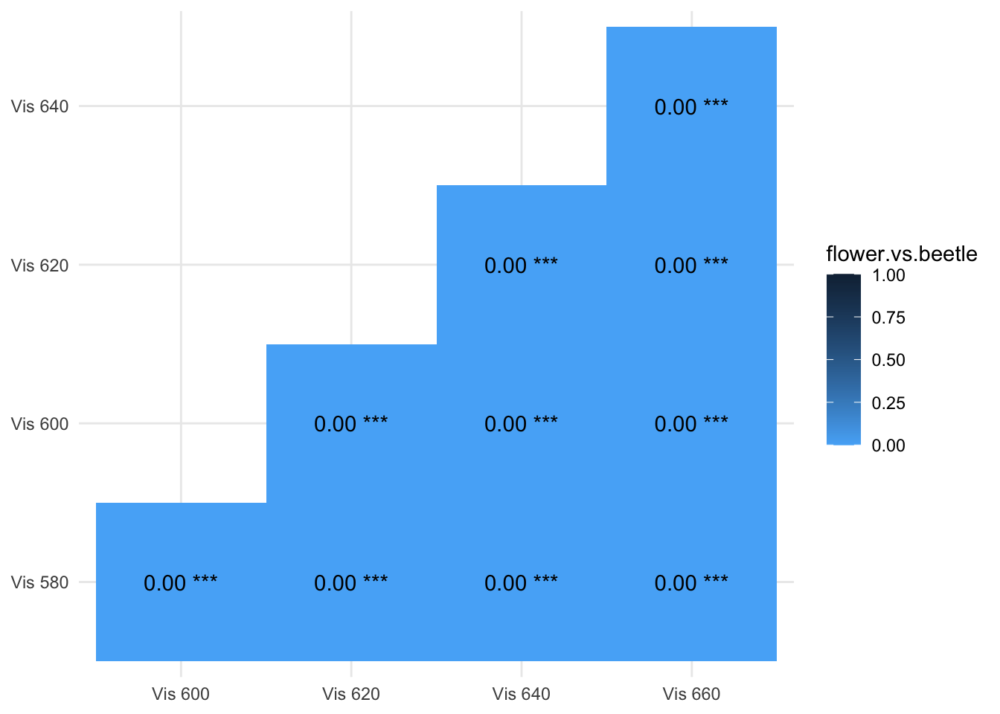
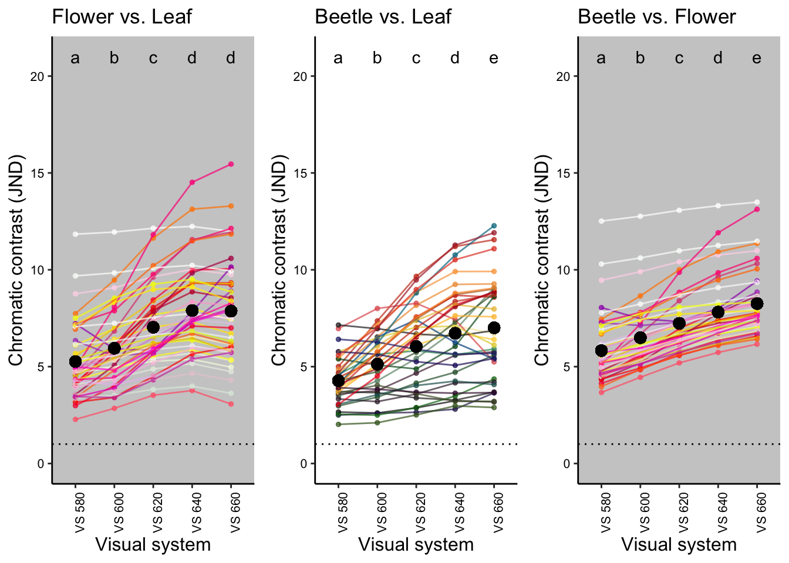
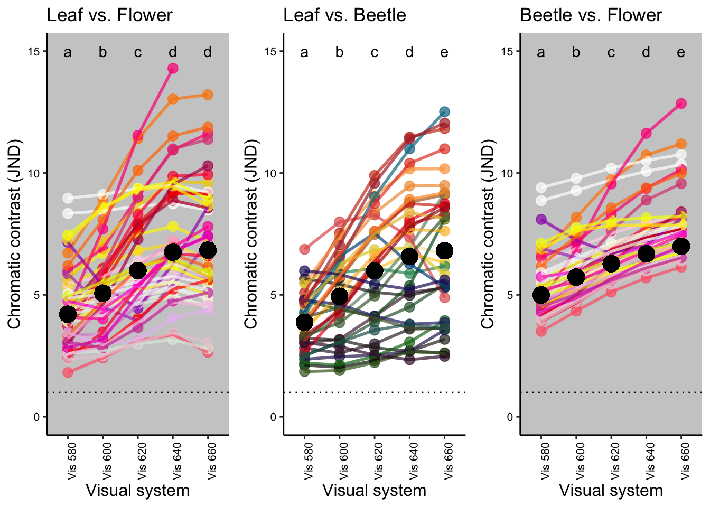
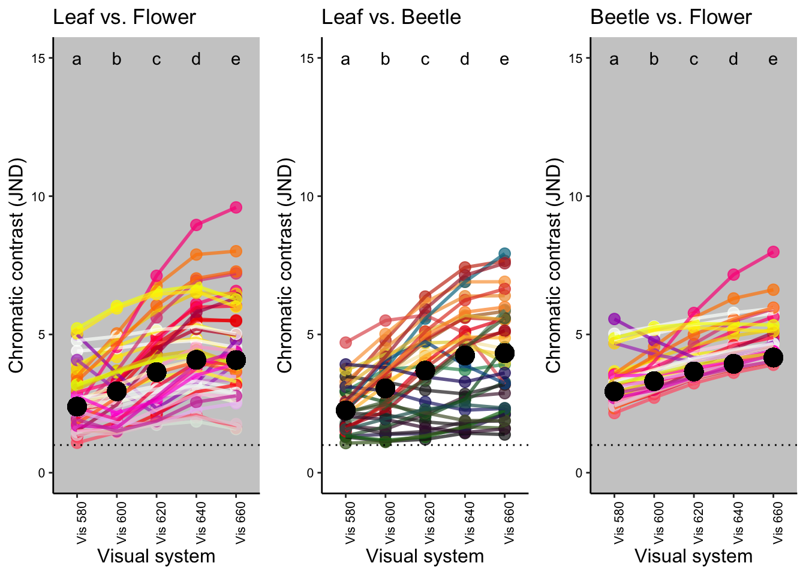

Sensitivity analysis
Supplementary Information
Lu-Yi Wang1, Devi Stuart-Fox1, Geoff Walker1, Nicholas W. Roberts2 and Amanda M. Franklin1
1School of Biosciences, The University of Melbourne, Australia
2School of Biological Sciences, University of Bristol, UK
The aim
To test whether the modelling results were sensitive to the photoreceptor ratios used, we repeated these analyses using published ratios that represent the known variation in insects. Specifically, we compared the tetrachomat visual sistem with peak sensitivities at 380, 460, 520 and 580 nm. We applied the same modelling method described in the main text but using ratios of different insects, including the jewel beetle, Agrilus planipennis (same as the ratio used in the main text; 1.14: 1: 1.26: 1.38; UVS: SWS: MWS: LWS), and two butterflies, Papilio Xuthus (1: 1: 4.08: 2.92) and Heliconius sp. type III (0.09: 0.13: 0.2: 1). The model parameters and the statistical methods remain the same as described in the main text.
library(pavo)
library(dplyr)
library(stringr)
library(tidyr) #for gather() function
library(ggplot2)
library(lme4)
library(car)
library(multcomp)
library(boot) #for mean() function
library(pander) #for creating tidy tables
library(ggpubr) #for ggarrange() function
Figure caption: Vis 580 was used for the sensitivity analysis
Data description
We used the same spectral data collected from beetles and plants as described in the Main models section.
Run the visual models
We created 3 different visual systems using different receptor ratios from 3 insect species (UVS, SWS, MWS, LWS):
- Agrilus planipennis: 1.14, 1, 1.26, 1.38
- Papilio xuthus: 1, 1, 4.08, 2.92
- Heliconius sp. type III : 1, 1.44, 2.22, 11.11
First: Quantum catch calculation
- We used the
vismodelfunction in the package pavo to calculate quantum catch. - For each visual system, quantum catch was calculated based on Fechner’s law (the signal of the receptor channel is proportional to the logarithm of the quantum catch).
- The average of all leaf spectra was used as the background adapting light.
- The von Kries chromatic adaptation was applied.
#Quantum catch - D65 - Visual model 2
#shared between 3 species
buprest580=vismodel(dataset[1:501,], visual = specsensbuprest.model2[, 1:5], bkg=aveleaf$aveleaf, illum = irradiance.d65[1:501,2], qcatch = 'fi', relative=FALSE, vonkries=TRUE)
buprest600=vismodel(dataset[1:501,], visual = specsensbuprest.model2[, c(1,2,3,4,6)], bkg=aveleaf$aveleaf, illum = irradiance.d65[1:501,2], qcatch = 'fi', relative=FALSE, vonkries=TRUE)
buprest620=vismodel(dataset[1:501,], visual = specsensbuprest.model2[, c(1,2,3,4,7)], bkg=aveleaf$aveleaf, illum = irradiance.d65[1:501,2], qcatch = 'fi', relative=FALSE, vonkries=TRUE)
buprest640=vismodel(dataset[1:501,], visual = specsensbuprest.model2[, c(1,2,3,4,8)], bkg=aveleaf$aveleaf, illum = irradiance.d65[1:501,2], qcatch = 'fi', relative=FALSE, vonkries=TRUE)
buprest660=vismodel(dataset[1:501,], visual = specsensbuprest.model2[, c(1,2,3,4,9)], bkg=aveleaf$aveleaf, illum = irradiance.d65[1:501,2], qcatch = 'fi', relative=FALSE, vonkries=TRUE)Second: Contrast calculation
- To calculate chromatic contrast we used the
coldistfunction in pavo. - We used a neural noise-limited model where the noise is proportional to the Weber fraction and is independent of the intensity of the signal received.
- The Weber fraction was 0.1.
#Contrast calculation- D65 - Visual model 2
#for Agrilus planipennis
Cbuprest580 = coldist(buprest580, noise="neural", achro=FALSE, n = c(1.14,1,1.26,1.38), weber = 0.1, weber.ref = 4)
Cbuprest600 = coldist(buprest600, noise="neural", achro=FALSE, n = c(1.14,1,1.26,1.38), weber = 0.1, weber.ref = 4)
Cbuprest620 = coldist(buprest620, noise="neural", achro=FALSE, n = c(1.14,1,1.26,1.38), weber = 0.1, weber.ref = 4)
Cbuprest640 = coldist(buprest640, noise="neural", achro=FALSE, n = c(1.14,1,1.26,1.38), weber = 0.1, weber.ref = 4)
Cbuprest660 = coldist(buprest660, noise="neural", achro=FALSE, n = c(1.14,1,1.26,1.38), weber = 0.1, weber.ref = 4)
#for Papilio xuthus
Cpapilio580 = coldist(buprest580, noise="neural", achro=FALSE, n = c(1, 1, 4.08, 2.92), weber = 0.1, weber.ref = 4)
Cpapilio600 = coldist(buprest600, noise="neural", achro=FALSE, n = c(1, 1, 4.08, 2.92), weber = 0.1, weber.ref = 4)
Cpapilio620 = coldist(buprest620, noise="neural", achro=FALSE, n = c(1, 1, 4.08, 2.92), weber = 0.1, weber.ref = 4)
Cpapilio640 = coldist(buprest640, noise="neural", achro=FALSE, n = c(1, 1, 4.08, 2.92), weber = 0.1, weber.ref = 4)
Cpapilio660 = coldist(buprest660, noise="neural", achro=FALSE, n = c(1, 1, 4.08, 2.92), weber = 0.1, weber.ref = 4)
#for Heliconius sp
Cheliconius580 = coldist(buprest580, noise="neural", achro=FALSE, n = c(1, 1.44, 2.22, 11.11), weber = 0.1, weber.ref = 4)
Cheliconius600 = coldist(buprest600, noise="neural", achro=FALSE, n = c(1, 1.44, 2.22, 11.11), weber = 0.1, weber.ref = 4)
Cheliconius620 = coldist(buprest620, noise="neural", achro=FALSE, n = c(1, 1.44, 2.22, 11.11), weber = 0.1, weber.ref = 4)
Cheliconius640 = coldist(buprest640, noise="neural", achro=FALSE, n = c(1, 1.44, 2.22, 11.11), weber = 0.1, weber.ref = 4)
Cheliconius660 = coldist(buprest660, noise="neural", achro=FALSE, n = c(1, 1.44, 2.22, 11.11), weber = 0.1, weber.ref = 4)Compare contrasts
#creat different comparison groups for furthur GLMM analysis
#Organize data before GLMM
#for Agrilus planipennis
##flower vs leaf
Cbuprest580.leaf.vs.flower=
Cbuprest580 %>%filter(str_detect(patch1, "flower")) %>% filter(str_detect(patch2, "leaves"))
Cbuprest600.leaf.vs.flower=
Cbuprest600 %>%filter(str_detect(patch1, "flower")) %>% filter(str_detect(patch2, "leaves"))
Cbuprest620.leaf.vs.flower=
Cbuprest620 %>%filter(str_detect(patch1, "flower")) %>% filter(str_detect(patch2, "leaves"))
Cbuprest640.leaf.vs.flower=
Cbuprest640 %>%filter(str_detect(patch1, "flower")) %>% filter(str_detect(patch2, "leaves"))
Cbuprest660.leaf.vs.flower=
Cbuprest660 %>%filter(str_detect(patch1, "flower")) %>% filter(str_detect(patch2, "leaves"))
Cbuprest.leaf.vs.flower=
Cbuprest580.leaf.vs.flower %>% rbind(Cbuprest600.leaf.vs.flower) %>%
rbind(Cbuprest620.leaf.vs.flower)%>% rbind(Cbuprest640.leaf.vs.flower) %>% rbind(Cbuprest660.leaf.vs.flower)
bup580.leaf.vs.flower<-Cbuprest580.leaf.vs.flower[,3]
bup600.leaf.vs.flower<-Cbuprest600.leaf.vs.flower[,3]
bup620.leaf.vs.flower<-Cbuprest620.leaf.vs.flower[,3]
bup640.leaf.vs.flower<-Cbuprest640.leaf.vs.flower[,3]
bup660.leaf.vs.flower<-Cbuprest660.leaf.vs.flower[,3]
com.bupcontrast.leaf.vs.flower<-cbind(Cbuprest.leaf.vs.flower[,1:2],bup580.leaf.vs.flower,bup600.leaf.vs.flower,bup620.leaf.vs.flower,bup640.leaf.vs.flower,bup660.leaf.vs.flower)
compare.leaf.vs.flower.bup <- com.bupcontrast.leaf.vs.flower %>%
gather(key = "peak_wl.leaf.vs.flower", value = "dS", 3:7)
##beetle vs leaf
Cbuprest580.leaf.vs.beetle=
Cbuprest580 %>%filter(str_detect(patch1, "leaves")) %>% filter(str_detect(patch2, "beetle"))
Cbuprest600.leaf.vs.beetle=
Cbuprest600 %>%filter(str_detect(patch1, "leaves")) %>% filter(str_detect(patch2, "beetle"))
Cbuprest620.leaf.vs.beetle=
Cbuprest620 %>%filter(str_detect(patch1, "leaves")) %>% filter(str_detect(patch2, "beetle"))
Cbuprest640.leaf.vs.beetle=
Cbuprest640 %>%filter(str_detect(patch1, "leaves")) %>% filter(str_detect(patch2, "beetle"))
Cbuprest660.leaf.vs.beetle=
Cbuprest660 %>%filter(str_detect(patch1, "leaves")) %>% filter(str_detect(patch2, "beetle"))
Cbuprest.leaf.vs.beetle=
Cbuprest580.leaf.vs.beetle %>% rbind(Cbuprest600.leaf.vs.beetle)%>%
rbind(Cbuprest620.leaf.vs.beetle)%>% rbind(Cbuprest640.leaf.vs.beetle) %>% rbind(Cbuprest660.leaf.vs.beetle)
bup580.leaf.vs.beetle<-Cbuprest580.leaf.vs.beetle[,3]
bup600.leaf.vs.beetle<-Cbuprest600.leaf.vs.beetle[,3]
bup620.leaf.vs.beetle<-Cbuprest620.leaf.vs.beetle[,3]
bup640.leaf.vs.beetle<-Cbuprest640.leaf.vs.beetle[,3]
bup660.leaf.vs.beetle<-Cbuprest660.leaf.vs.beetle[,3]
com.bupcontrast.leaf.vs.beetle<-cbind(Cbuprest.leaf.vs.beetle[,1:2],bup580.leaf.vs.beetle,bup600.leaf.vs.beetle,bup620.leaf.vs.beetle,bup640.leaf.vs.beetle,bup660.leaf.vs.beetle)
compare.leaf.vs.beetle.bup <- com.bupcontrast.leaf.vs.beetle %>%
gather(key = "peak_wl.leaf.vs.beetle", value = "dS", 3:7)
##beetle vs flower
Cbuprest580.flower.vs.beetle=
Cbuprest580 %>%filter(str_detect(patch1, "flower")) %>% filter(str_detect(patch2, "beetle"))
Cbuprest600.flower.vs.beetle=
Cbuprest600 %>%filter(str_detect(patch1, "flower")) %>% filter(str_detect(patch2, "beetle"))
Cbuprest620.flower.vs.beetle=
Cbuprest620 %>%filter(str_detect(patch1, "flower")) %>% filter(str_detect(patch2, "beetle"))
Cbuprest640.flower.vs.beetle=
Cbuprest640 %>%filter(str_detect(patch1, "flower")) %>% filter(str_detect(patch2, "beetle"))
Cbuprest660.flower.vs.beetle=
Cbuprest660 %>%filter(str_detect(patch1, "flower")) %>% filter(str_detect(patch2, "beetle"))
Cbuprest.flower.vs.beetle=
Cbuprest580.flower.vs.beetle %>% rbind(Cbuprest600.flower.vs.beetle) %>%
rbind(Cbuprest620.flower.vs.beetle)%>% rbind(Cbuprest640.flower.vs.beetle) %>%
rbind(Cbuprest660.flower.vs.beetle)
bup580.flower.vs.beetle<-Cbuprest580.flower.vs.beetle[,3]
bup600.flower.vs.beetle<-Cbuprest600.flower.vs.beetle[,3]
bup620.flower.vs.beetle<-Cbuprest620.flower.vs.beetle[,3]
bup640.flower.vs.beetle<-Cbuprest640.flower.vs.beetle[,3]
bup660.flower.vs.beetle<-Cbuprest660.flower.vs.beetle[,3]
com.bupcontrast.flower.vs.beetle<-cbind(Cbuprest.flower.vs.beetle[,1:2],bup580.flower.vs.beetle,bup600.flower.vs.beetle,bup620.flower.vs.beetle,bup640.flower.vs.beetle,bup660.flower.vs.beetle)
compare.flower.vs.beetle.bup <- com.bupcontrast.flower.vs.beetle %>%
gather(key = "peak_wl.flower.vs.beetle", value = "dS", 3:7)
#for Papilio xuthus
##flower vs leaf
Cpapilio580.leaf.vs.flower=
Cpapilio580 %>%filter(str_detect(patch1, "flower")) %>% filter(str_detect(patch2, "leaves"))
Cpapilio600.leaf.vs.flower=
Cpapilio600 %>%filter(str_detect(patch1, "flower")) %>% filter(str_detect(patch2, "leaves"))
Cpapilio620.leaf.vs.flower=
Cpapilio620 %>%filter(str_detect(patch1, "flower")) %>% filter(str_detect(patch2, "leaves"))
Cpapilio640.leaf.vs.flower=
Cpapilio640 %>%filter(str_detect(patch1, "flower")) %>% filter(str_detect(patch2, "leaves"))
Cpapilio660.leaf.vs.flower=
Cpapilio660 %>%filter(str_detect(patch1, "flower")) %>% filter(str_detect(patch2, "leaves"))
Cpapilio.leaf.vs.flower=
Cpapilio580.leaf.vs.flower %>% rbind(Cpapilio600.leaf.vs.flower) %>%
rbind(Cpapilio620.leaf.vs.flower)%>% rbind(Cpapilio640.leaf.vs.flower) %>% rbind(Cpapilio660.leaf.vs.flower)
pap580.leaf.vs.flower<-Cpapilio580.leaf.vs.flower[,3]
pap600.leaf.vs.flower<-Cpapilio600.leaf.vs.flower[,3]
pap620.leaf.vs.flower<-Cpapilio620.leaf.vs.flower[,3]
pap640.leaf.vs.flower<-Cpapilio640.leaf.vs.flower[,3]
pap660.leaf.vs.flower<-Cpapilio660.leaf.vs.flower[,3]
com.papcontrast.leaf.vs.flower<-cbind(Cpapilio.leaf.vs.flower[,1:2],pap580.leaf.vs.flower,pap600.leaf.vs.flower,pap620.leaf.vs.flower,pap640.leaf.vs.flower,pap660.leaf.vs.flower)
compare.leaf.vs.flower.pap <- com.papcontrast.leaf.vs.flower %>%
gather(key = "peak_wl.leaf.vs.flower", value = "dS", 3:7)
##beetle vs leaf
Cpapilio580.leaf.vs.beetle=
Cpapilio580 %>%filter(str_detect(patch1, "leaves")) %>% filter(str_detect(patch2, "beetle"))
Cpapilio600.leaf.vs.beetle=
Cpapilio600 %>%filter(str_detect(patch1, "leaves")) %>% filter(str_detect(patch2, "beetle"))
Cpapilio620.leaf.vs.beetle=
Cpapilio620 %>%filter(str_detect(patch1, "leaves")) %>% filter(str_detect(patch2, "beetle"))
Cpapilio640.leaf.vs.beetle=
Cpapilio640 %>%filter(str_detect(patch1, "leaves")) %>% filter(str_detect(patch2, "beetle"))
Cpapilio660.leaf.vs.beetle=
Cpapilio660 %>%filter(str_detect(patch1, "leaves")) %>% filter(str_detect(patch2, "beetle"))
Cpapilio.leaf.vs.beetle=
Cpapilio580.leaf.vs.beetle %>% rbind(Cpapilio600.leaf.vs.beetle)%>%
rbind(Cpapilio620.leaf.vs.beetle)%>% rbind(Cpapilio640.leaf.vs.beetle) %>% rbind(Cpapilio660.leaf.vs.beetle)
pap580.leaf.vs.beetle<-Cpapilio580.leaf.vs.beetle[,3]
pap600.leaf.vs.beetle<-Cpapilio600.leaf.vs.beetle[,3]
pap620.leaf.vs.beetle<-Cpapilio620.leaf.vs.beetle[,3]
pap640.leaf.vs.beetle<-Cpapilio640.leaf.vs.beetle[,3]
pap660.leaf.vs.beetle<-Cpapilio660.leaf.vs.beetle[,3]
com.papcontrast.leaf.vs.beetle<-cbind(Cpapilio.leaf.vs.beetle[,1:2],pap580.leaf.vs.beetle,pap600.leaf.vs.beetle,pap620.leaf.vs.beetle,pap640.leaf.vs.beetle,pap660.leaf.vs.beetle)
compare.leaf.vs.beetle.pap <- com.papcontrast.leaf.vs.beetle %>%
gather(key = "peak_wl.leaf.vs.beetle", value = "dS", 3:7)
##beetle vs flower
Cpapilio580.flower.vs.beetle=
Cpapilio580 %>%filter(str_detect(patch1, "flower")) %>% filter(str_detect(patch2, "beetle"))
Cpapilio600.flower.vs.beetle=
Cpapilio600 %>%filter(str_detect(patch1, "flower")) %>% filter(str_detect(patch2, "beetle"))
Cpapilio620.flower.vs.beetle=
Cpapilio620 %>%filter(str_detect(patch1, "flower")) %>% filter(str_detect(patch2, "beetle"))
Cpapilio640.flower.vs.beetle=
Cpapilio640 %>%filter(str_detect(patch1, "flower")) %>% filter(str_detect(patch2, "beetle"))
Cpapilio660.flower.vs.beetle=
Cpapilio660 %>%filter(str_detect(patch1, "flower")) %>% filter(str_detect(patch2, "beetle"))
Cpapilio.flower.vs.beetle=
Cpapilio580.flower.vs.beetle %>% rbind(Cpapilio600.flower.vs.beetle) %>%
rbind(Cpapilio620.flower.vs.beetle)%>% rbind(Cpapilio640.flower.vs.beetle) %>%
rbind(Cpapilio660.flower.vs.beetle)
pap580.flower.vs.beetle<-Cpapilio580.flower.vs.beetle[,3]
pap600.flower.vs.beetle<-Cpapilio600.flower.vs.beetle[,3]
pap620.flower.vs.beetle<-Cpapilio620.flower.vs.beetle[,3]
pap640.flower.vs.beetle<-Cpapilio640.flower.vs.beetle[,3]
pap660.flower.vs.beetle<-Cpapilio660.flower.vs.beetle[,3]
com.papcontrast.flower.vs.beetle<-cbind(Cpapilio.flower.vs.beetle[,1:2],pap580.flower.vs.beetle,pap600.flower.vs.beetle,pap620.flower.vs.beetle,pap640.flower.vs.beetle,pap660.flower.vs.beetle)
compare.flower.vs.beetle.pap <- com.papcontrast.flower.vs.beetle %>%
gather(key = "peak_wl.flower.vs.beetle", value = "dS", 3:7)
#for Heliconius sp
##flower vs leaf
Cheliconius580.leaf.vs.flower=
Cheliconius580 %>%filter(str_detect(patch1, "flower")) %>% filter(str_detect(patch2, "leaves"))
Cheliconius600.leaf.vs.flower=
Cheliconius600 %>%filter(str_detect(patch1, "flower")) %>% filter(str_detect(patch2, "leaves"))
Cheliconius620.leaf.vs.flower=
Cheliconius620 %>%filter(str_detect(patch1, "flower")) %>% filter(str_detect(patch2, "leaves"))
Cheliconius640.leaf.vs.flower=
Cheliconius640 %>%filter(str_detect(patch1, "flower")) %>% filter(str_detect(patch2, "leaves"))
Cheliconius660.leaf.vs.flower=
Cheliconius660 %>%filter(str_detect(patch1, "flower")) %>% filter(str_detect(patch2, "leaves"))
Cheliconius.leaf.vs.flower=
Cheliconius580.leaf.vs.flower %>% rbind(Cheliconius600.leaf.vs.flower) %>%
rbind(Cheliconius620.leaf.vs.flower)%>% rbind(Cheliconius640.leaf.vs.flower) %>% rbind(Cheliconius660.leaf.vs.flower)
heli580.leaf.vs.flower<-Cheliconius580.leaf.vs.flower[,3]
heli600.leaf.vs.flower<-Cheliconius600.leaf.vs.flower[,3]
heli620.leaf.vs.flower<-Cheliconius620.leaf.vs.flower[,3]
heli640.leaf.vs.flower<-Cheliconius640.leaf.vs.flower[,3]
heli660.leaf.vs.flower<-Cheliconius660.leaf.vs.flower[,3]
com.helicontrast.leaf.vs.flower<-cbind(Cheliconius.leaf.vs.flower[,1:2],heli580.leaf.vs.flower,heli600.leaf.vs.flower,heli620.leaf.vs.flower,heli640.leaf.vs.flower,heli660.leaf.vs.flower)
compare.leaf.vs.flower.heli <- com.helicontrast.leaf.vs.flower %>%
gather(key = "peak_wl.leaf.vs.flower", value = "dS", 3:7)
##beetle vs leaf
Cheliconius580.leaf.vs.beetle=
Cheliconius580 %>%filter(str_detect(patch1, "leaves")) %>% filter(str_detect(patch2, "beetle"))
Cheliconius600.leaf.vs.beetle=
Cheliconius600 %>%filter(str_detect(patch1, "leaves")) %>% filter(str_detect(patch2, "beetle"))
Cheliconius620.leaf.vs.beetle=
Cheliconius620 %>%filter(str_detect(patch1, "leaves")) %>% filter(str_detect(patch2, "beetle"))
Cheliconius640.leaf.vs.beetle=
Cheliconius640 %>%filter(str_detect(patch1, "leaves")) %>% filter(str_detect(patch2, "beetle"))
Cheliconius660.leaf.vs.beetle=
Cheliconius660 %>%filter(str_detect(patch1, "leaves")) %>% filter(str_detect(patch2, "beetle"))
Cheliconius.leaf.vs.beetle=
Cheliconius580.leaf.vs.beetle %>% rbind(Cheliconius600.leaf.vs.beetle)%>%
rbind(Cheliconius620.leaf.vs.beetle)%>% rbind(Cheliconius640.leaf.vs.beetle) %>% rbind(Cheliconius660.leaf.vs.beetle)
heli580.leaf.vs.beetle<-Cheliconius580.leaf.vs.beetle[,3]
heli600.leaf.vs.beetle<-Cheliconius600.leaf.vs.beetle[,3]
heli620.leaf.vs.beetle<-Cheliconius620.leaf.vs.beetle[,3]
heli640.leaf.vs.beetle<-Cheliconius640.leaf.vs.beetle[,3]
heli660.leaf.vs.beetle<-Cheliconius660.leaf.vs.beetle[,3]
com.helicontrast.leaf.vs.beetle<-cbind(Cheliconius.leaf.vs.beetle[,1:2],heli580.leaf.vs.beetle,heli600.leaf.vs.beetle,heli620.leaf.vs.beetle,heli640.leaf.vs.beetle,heli660.leaf.vs.beetle)
compare.leaf.vs.beetle.heli <- com.helicontrast.leaf.vs.beetle %>%
gather(key = "peak_wl.leaf.vs.beetle", value = "dS", 3:7)
##beetle vs flower
Cheliconius580.flower.vs.beetle=
Cheliconius580 %>%filter(str_detect(patch1, "flower")) %>% filter(str_detect(patch2, "beetle"))
Cheliconius600.flower.vs.beetle=
Cheliconius600 %>%filter(str_detect(patch1, "flower")) %>% filter(str_detect(patch2, "beetle"))
Cheliconius620.flower.vs.beetle=
Cheliconius620 %>%filter(str_detect(patch1, "flower")) %>% filter(str_detect(patch2, "beetle"))
Cheliconius640.flower.vs.beetle=
Cheliconius640 %>%filter(str_detect(patch1, "flower")) %>% filter(str_detect(patch2, "beetle"))
Cheliconius660.flower.vs.beetle=
Cheliconius660 %>%filter(str_detect(patch1, "flower")) %>% filter(str_detect(patch2, "beetle"))
Cheliconius.flower.vs.beetle=
Cheliconius580.flower.vs.beetle %>% rbind(Cheliconius600.flower.vs.beetle) %>%
rbind(Cheliconius620.flower.vs.beetle)%>% rbind(Cheliconius640.flower.vs.beetle) %>%
rbind(Cheliconius660.flower.vs.beetle)
heli580.flower.vs.beetle<-Cheliconius580.flower.vs.beetle[,3]
heli600.flower.vs.beetle<-Cheliconius600.flower.vs.beetle[,3]
heli620.flower.vs.beetle<-Cheliconius620.flower.vs.beetle[,3]
heli640.flower.vs.beetle<-Cheliconius640.flower.vs.beetle[,3]
heli660.flower.vs.beetle<-Cheliconius660.flower.vs.beetle[,3]
com.helicontrast.flower.vs.beetle<-cbind(Cheliconius.flower.vs.beetle[,1:2],heli580.flower.vs.beetle,heli600.flower.vs.beetle,heli620.flower.vs.beetle,heli640.flower.vs.beetle,heli660.flower.vs.beetle)
compare.flower.vs.beetle.heli <- com.helicontrast.flower.vs.beetle%>%
gather(key = "peak_wl.flower.vs.beetle", value = "dS", 3:7)
To compare contrasts between visual systems, We conducted Wald chi-square tests on generalised linear mixed models (GLMM) followed by posthoc tests.
- In the models, we assigned
- Independent variable: contrast
- Dependent variable:
- Fixed factor: visual system
- Random factor: sample ID of both targets in the comparison
Click the tabs to see the results for each comparison group ( Leaf vs. Flower / Leaf vs. Beetle / Beetle vs. Flower)
#for Agrilus planipennis
##Leaf vs Flower
m.leaf.vs.flower.bup <- lmer(dS~peak_wl.leaf.vs.flower + (1|patch2) + (1|patch1), data = compare.leaf.vs.flower.bup,REML=F)
sum.leaf.vs.flower.bup <- summary(glht(m.leaf.vs.flower.bup, linfct = mcp(peak_wl.leaf.vs.flower = "Tukey")), test = adjusted("bonferroni"))
##Leaf vs Beetle
m.leaf.vs.beetle.bup <- lmer(dS~peak_wl.leaf.vs.beetle + (1|patch2) + (1|patch1), data = compare.leaf.vs.beetle.bup,REML=F)
sum.leaf.vs.beetle.bup <- summary(glht(m.leaf.vs.beetle.bup, linfct = mcp(peak_wl.leaf.vs.beetle = "Tukey")), test = adjusted("bonferroni"))
##Beetle vs Flower
m.flower.vs.beetle.bup <- lmer(dS~peak_wl.flower.vs.beetle + (1|patch2) + (1|patch1), data = compare.flower.vs.beetle.bup,REML=F)
sum.flower.vs.beetle.bup <- summary(glht(m.flower.vs.beetle.bup, linfct = mcp(peak_wl.flower.vs.beetle = "Tukey")), test = adjusted("bonferroni"))
###reshape data for heatmap
p1.bup<-sum.leaf.vs.flower.bup[["test"]][["pvalues"]]
p2.bup<-sum.leaf.vs.beetle.bup[["test"]][["pvalues"]]
p3.bup<-sum.flower.vs.beetle.bup[["test"]][["pvalues"]]
VislistA.bup<-c("Vis 600","Vis 620","Vis 640","Vis 660","Vis 620","Vis 640","Vis 660","Vis 640","Vis 660","Vis 660")
VislistB.bup<-c("Vis 580","Vis 580","Vis 580","Vis 580","Vis 600","Vis 600","Vis 600","Vis 620","Vis 620","Vis 640")
heat.bup<-data.frame(names(p1.bup),as.numeric(str_extract(p1.bup,"([0-9]+).*$"))) %>%
cbind(as.numeric(str_extract(p2.bup,"([0-9]+).*$"))) %>%
cbind(as.numeric(str_extract(p3.bup,"([0-9]+).*$"))) %>%
dplyr:: rename(orignial.list = 1, leaf.vs.flower = 2, leaf.vs.beetle = 3, flower.vs.beetle = 4) %>%
cbind(VislistA.bup) %>%
cbind(VislistB.bup) %>%
dplyr::select(-orignial.list)
##add asterisks for significant pairs
heat.bup$sig.leaf.vs.flower[heat.bup$leaf.vs.flower > 0.05] <- ""
heat.bup$sig.leaf.vs.flower[heat.bup$leaf.vs.flower < 0.05] <- "*"
heat.bup$sig.leaf.vs.flower[heat.bup$leaf.vs.flower < 0.01] <- "**"
heat.bup$sig.leaf.vs.flower[heat.bup$leaf.vs.flower < 0.0001] <- "***"
heat.bup$sig.leaf.vs.beetle[heat.bup$leaf.vs.beetle > 0.05] <- ""
heat.bup$sig.leaf.vs.beetle[heat.bup$leaf.vs.beetle < 0.05] <- "*"
heat.bup$sig.leaf.vs.beetle[heat.bup$leaf.vs.beetle < 0.01] <- "**"
heat.bup$sig.leaf.vs.beetle[heat.bup$leaf.vs.beetle < 0.0001] <- "***"
heat.bup$sig.flower.vs.beetle[heat.bup$flower.vs.beetle > 0.05] <- ""
heat.bup$sig.flower.vs.beetle[heat.bup$flower.vs.beetle < 0.05] <- "*"
heat.bup$sig.flower.vs.beetle[heat.bup$flower.vs.beetle < 0.01] <- "**"
heat.bup$sig.flower.vs.beetle[heat.bup$flower.vs.beetle < 0.0001] <- "***"
#for Papilio xuthus
##Leaf vs Flower
m.leaf.vs.flower.pap <- lmer(dS~peak_wl.leaf.vs.flower + (1|patch2) + (1|patch1), data = compare.leaf.vs.flower.pap,REML=F)
sum.leaf.vs.flower.pap <- summary(glht(m.leaf.vs.flower.pap, linfct = mcp(peak_wl.leaf.vs.flower = "Tukey")), test = adjusted("bonferroni"))
##Leaf vs Beetle
m.leaf.vs.beetle.pap <- lmer(dS~peak_wl.leaf.vs.beetle + (1|patch2) + (1|patch1), data = compare.leaf.vs.beetle.pap,REML=F)
sum.leaf.vs.beetle.pap <- summary(glht(m.leaf.vs.beetle.pap, linfct = mcp(peak_wl.leaf.vs.beetle = "Tukey")), test = adjusted("bonferroni"))
##Beetle vs Flower
m.flower.vs.beetle.pap <- lmer(dS~peak_wl.flower.vs.beetle + (1|patch2) + (1|patch1), data = compare.flower.vs.beetle.pap,REML=F)
sum.flower.vs.beetle.pap <- summary(glht(m.flower.vs.beetle.pap, linfct = mcp(peak_wl.flower.vs.beetle = "Tukey")), test = adjusted("bonferroni"))
###reshape data for heatmap
p1.pap<-sum.leaf.vs.flower.pap[["test"]][["pvalues"]]
p2.pap<-sum.leaf.vs.beetle.pap[["test"]][["pvalues"]]
p3.pap<-sum.flower.vs.beetle.pap[["test"]][["pvalues"]]
VislistA.pap<-c("Vis 600","Vis 620","Vis 640","Vis 660","Vis 620","Vis 640","Vis 660","Vis 640","Vis 660","Vis 660")
VislistB.pap<-c("Vis 580","Vis 580","Vis 580","Vis 580","Vis 600","Vis 600","Vis 600","Vis 620","Vis 620","Vis 640")
heat.pap<-data.frame(names(p1.pap),as.numeric(str_extract(p1.pap,"([0-9]+).*$"))) %>%
cbind(as.numeric(str_extract(p2.pap,"([0-9]+).*$"))) %>%
cbind(as.numeric(str_extract(p3.pap,"([0-9]+).*$"))) %>%
dplyr:: rename(orignial.list = 1, leaf.vs.flower = 2, leaf.vs.beetle = 3, flower.vs.beetle = 4) %>%
cbind(VislistA.pap) %>%
cbind(VislistB.pap) %>%
dplyr::select(-orignial.list)
##add asterisks for significant pairs
heat.pap$sig.leaf.vs.flower[heat.pap$leaf.vs.flower > 0.05] <- ""
heat.pap$sig.leaf.vs.flower[heat.pap$leaf.vs.flower < 0.05] <- "*"
heat.pap$sig.leaf.vs.flower[heat.pap$leaf.vs.flower < 0.01] <- "**"
heat.pap$sig.leaf.vs.flower[heat.pap$leaf.vs.flower < 0.0001] <- "***"
heat.pap$sig.leaf.vs.beetle[heat.pap$leaf.vs.beetle > 0.05] <- ""
heat.pap$sig.leaf.vs.beetle[heat.pap$leaf.vs.beetle < 0.05] <- "*"
heat.pap$sig.leaf.vs.beetle[heat.pap$leaf.vs.beetle < 0.01] <- "**"
heat.pap$sig.leaf.vs.beetle[heat.pap$leaf.vs.beetle < 0.0001] <- "***"
heat.pap$sig.flower.vs.beetle[heat.pap$flower.vs.beetle > 0.05] <- ""
heat.pap$sig.flower.vs.beetle[heat.pap$flower.vs.beetle < 0.05] <- "*"
heat.pap$sig.flower.vs.beetle[heat.pap$flower.vs.beetle < 0.01] <- "**"
heat.pap$sig.flower.vs.beetle[heat.pap$flower.vs.beetle < 0.0001] <- "***"
#for Heliconius sp
##Leaf vs Flower
m.leaf.vs.flower.heli <- lmer(dS~peak_wl.leaf.vs.flower + (1|patch2) + (1|patch1), data = compare.leaf.vs.flower.heli,REML=F)
sum.leaf.vs.flower.heli <- summary(glht(m.leaf.vs.flower.heli, linfct = mcp(peak_wl.leaf.vs.flower = "Tukey")), test = adjusted("bonferroni"))
##Leaf vs Beetle
m.leaf.vs.beetle.heli <- lmer(dS~peak_wl.leaf.vs.beetle + (1|patch2) + (1|patch1), data = compare.leaf.vs.beetle.heli,REML=F)
sum.leaf.vs.beetle.heli <- summary(glht(m.leaf.vs.beetle.heli, linfct = mcp(peak_wl.leaf.vs.beetle = "Tukey")), test = adjusted("bonferroni"))
##Beetle vs Flower
m.flower.vs.beetle.heli <- lmer(dS~peak_wl.flower.vs.beetle + (1|patch2) + (1|patch1), data = compare.flower.vs.beetle.heli,REML=F)
sum.flower.vs.beetle.heli <- summary(glht(m.flower.vs.beetle.heli, linfct = mcp(peak_wl.flower.vs.beetle = "Tukey")), test = adjusted("bonferroni"))
###reshape data for heatmap
p1.heli<-sum.leaf.vs.flower.heli[["test"]][["pvalues"]]
p2.heli<-sum.leaf.vs.beetle.heli[["test"]][["pvalues"]]
p3.heli<-sum.flower.vs.beetle.heli[["test"]][["pvalues"]]
VislistA.heli<-c("Vis 600","Vis 620","Vis 640","Vis 660","Vis 620","Vis 640","Vis 660","Vis 640","Vis 660","Vis 660")
VislistB.heli<-c("Vis 580","Vis 580","Vis 580","Vis 580","Vis 600","Vis 600","Vis 600","Vis 620","Vis 620","Vis 640")
heat.heli<-data.frame(names(p1.heli),as.numeric(str_extract(p1.heli,"([0-9]+).*$"))) %>%
cbind(as.numeric(str_extract(p2.heli,"([0-9]+).*$"))) %>%
cbind(as.numeric(str_extract(p3.heli,"([0-9]+).*$"))) %>%
dplyr:: rename(orignial.list = 1, leaf.vs.flower = 2, leaf.vs.beetle = 3, flower.vs.beetle = 4) %>%
cbind(VislistA.heli) %>%
cbind(VislistB.heli) %>%
dplyr::select(-orignial.list)
##add asterisks for significant pairs
heat.heli$sig.leaf.vs.flower[heat.heli$leaf.vs.flower > 0.05] <- ""
heat.heli$sig.leaf.vs.flower[heat.heli$leaf.vs.flower < 0.05] <- "*"
heat.heli$sig.leaf.vs.flower[heat.heli$leaf.vs.flower < 0.01] <- "**"
heat.heli$sig.leaf.vs.flower[heat.heli$leaf.vs.flower < 0.0001] <- "***"
heat.heli$sig.leaf.vs.beetle[heat.heli$leaf.vs.beetle > 0.05] <- ""
heat.heli$sig.leaf.vs.beetle[heat.heli$leaf.vs.beetle < 0.05] <- "*"
heat.heli$sig.leaf.vs.beetle[heat.heli$leaf.vs.beetle < 0.01] <- "**"
heat.heli$sig.leaf.vs.beetle[heat.heli$leaf.vs.beetle < 0.0001] <- "***"
heat.heli$sig.flower.vs.beetle[heat.heli$flower.vs.beetle > 0.05] <- ""
heat.heli$sig.flower.vs.beetle[heat.heli$flower.vs.beetle < 0.05] <- "*"
heat.heli$sig.flower.vs.beetle[heat.heli$flower.vs.beetle < 0.01] <- "**"
heat.heli$sig.flower.vs.beetle[heat.heli$flower.vs.beetle < 0.0001] <- "***"Leaf vs Flower
Agrilus planipennis
Anova(m.leaf.vs.flower.bup) %>% pander()| Chisq | Df | Pr(>Chisq) | |
|---|---|---|---|
| peak_wl.leaf.vs.flower | 17104 | 4 | 0 |
Click the tabs to see the p-value summary plot or the original model output
Pair-wise p-values
ggplot(data = heat.bup, aes(x=VislistA.bup, y=VislistB.bup, fill=leaf.vs.flower)) +
geom_tile()+
geom_text(aes(VislistA.bup, VislistB.bup, label = paste(format(round(leaf.vs.flower, 2), nsmall = 2), sig.leaf.vs.flower)))+
scale_fill_continuous(high = "#132B43", low = "#56B1F7", limit=c(0,1))+ #delete if want to reverse the colour
theme_minimal()+
theme(axis.title.x=element_blank(),
axis.title.y=element_blank())
Original model output
sum.leaf.vs.flower.bup##
## Simultaneous Tests for General Linear Hypotheses
##
## Multiple Comparisons of Means: Tukey Contrasts
##
##
## Fit: lmer(formula = dS ~ peak_wl.leaf.vs.flower + (1 | patch2) + (1 |
## patch1), data = compare.leaf.vs.flower.bup, REML = F)
##
## Linear Hypotheses:
## Estimate Std. Error z value
## bup600.leaf.vs.flower - bup580.leaf.vs.flower == 0 0.50183 0.02128 23.578
## bup620.leaf.vs.flower - bup580.leaf.vs.flower == 0 1.41836 0.02128 66.640
## bup640.leaf.vs.flower - bup580.leaf.vs.flower == 0 2.20495 0.02128 103.597
## bup660.leaf.vs.flower - bup580.leaf.vs.flower == 0 2.15094 0.02128 101.059
## bup620.leaf.vs.flower - bup600.leaf.vs.flower == 0 0.91653 0.02128 43.062
## bup640.leaf.vs.flower - bup600.leaf.vs.flower == 0 1.70312 0.02128 80.019
## bup660.leaf.vs.flower - bup600.leaf.vs.flower == 0 1.64911 0.02128 77.481
## bup640.leaf.vs.flower - bup620.leaf.vs.flower == 0 0.78658 0.02128 36.957
## bup660.leaf.vs.flower - bup620.leaf.vs.flower == 0 0.73258 0.02128 34.419
## bup660.leaf.vs.flower - bup640.leaf.vs.flower == 0 -0.05400 0.02128 -2.537
## Pr(>|z|)
## bup600.leaf.vs.flower - bup580.leaf.vs.flower == 0 <2e-16 ***
## bup620.leaf.vs.flower - bup580.leaf.vs.flower == 0 <2e-16 ***
## bup640.leaf.vs.flower - bup580.leaf.vs.flower == 0 <2e-16 ***
## bup660.leaf.vs.flower - bup580.leaf.vs.flower == 0 <2e-16 ***
## bup620.leaf.vs.flower - bup600.leaf.vs.flower == 0 <2e-16 ***
## bup640.leaf.vs.flower - bup600.leaf.vs.flower == 0 <2e-16 ***
## bup660.leaf.vs.flower - bup600.leaf.vs.flower == 0 <2e-16 ***
## bup640.leaf.vs.flower - bup620.leaf.vs.flower == 0 <2e-16 ***
## bup660.leaf.vs.flower - bup620.leaf.vs.flower == 0 <2e-16 ***
## bup660.leaf.vs.flower - bup640.leaf.vs.flower == 0 0.112
## ---
## Signif. codes: 0 '***' 0.001 '**' 0.01 '*' 0.05 '.' 0.1 ' ' 1
## (Adjusted p values reported -- bonferroni method)
Papilio xuthus
Anova(m.leaf.vs.flower.pap) %>% pander()| Chisq | Df | Pr(>Chisq) | |
|---|---|---|---|
| peak_wl.leaf.vs.flower | 35546 | 4 | 0 |
Click the tabs to see the p-value summary plot or the original model output
Pair-wise p-values
ggplot(data = heat.pap, aes(x=VislistA.pap, y=VislistB.pap, fill=leaf.vs.flower)) +
geom_tile()+
geom_text(aes(VislistA.pap, VislistB.pap, label = paste(format(round(leaf.vs.flower, 2), nsmall = 2), sig.leaf.vs.flower)))+
scale_fill_continuous(high = "#132B43", low = "#56B1F7", limit=c(0,1))+ #delete if want to reverse the colour
theme_minimal()+
theme(axis.title.x=element_blank(),
axis.title.y=element_blank())
Original model output
sum.leaf.vs.flower.pap##
## Simultaneous Tests for General Linear Hypotheses
##
## Multiple Comparisons of Means: Tukey Contrasts
##
##
## Fit: lmer(formula = dS ~ peak_wl.leaf.vs.flower + (1 | patch2) + (1 |
## patch1), data = compare.leaf.vs.flower.pap, REML = F)
##
## Linear Hypotheses:
## Estimate Std. Error z value
## pap600.leaf.vs.flower - pap580.leaf.vs.flower == 0 0.68777 0.01788 38.47
## pap620.leaf.vs.flower - pap580.leaf.vs.flower == 0 1.78751 0.01788 99.97
## pap640.leaf.vs.flower - pap580.leaf.vs.flower == 0 2.67839 0.01788 149.79
## pap660.leaf.vs.flower - pap580.leaf.vs.flower == 0 2.64872 0.01788 148.13
## pap620.leaf.vs.flower - pap600.leaf.vs.flower == 0 1.09974 0.01788 61.51
## pap640.leaf.vs.flower - pap600.leaf.vs.flower == 0 1.99062 0.01788 111.33
## pap660.leaf.vs.flower - pap600.leaf.vs.flower == 0 1.96095 0.01788 109.67
## pap640.leaf.vs.flower - pap620.leaf.vs.flower == 0 0.89088 0.01788 49.82
## pap660.leaf.vs.flower - pap620.leaf.vs.flower == 0 0.86121 0.01788 48.16
## pap660.leaf.vs.flower - pap640.leaf.vs.flower == 0 -0.02967 0.01788 -1.66
## Pr(>|z|)
## pap600.leaf.vs.flower - pap580.leaf.vs.flower == 0 <2e-16 ***
## pap620.leaf.vs.flower - pap580.leaf.vs.flower == 0 <2e-16 ***
## pap640.leaf.vs.flower - pap580.leaf.vs.flower == 0 <2e-16 ***
## pap660.leaf.vs.flower - pap580.leaf.vs.flower == 0 <2e-16 ***
## pap620.leaf.vs.flower - pap600.leaf.vs.flower == 0 <2e-16 ***
## pap640.leaf.vs.flower - pap600.leaf.vs.flower == 0 <2e-16 ***
## pap660.leaf.vs.flower - pap600.leaf.vs.flower == 0 <2e-16 ***
## pap640.leaf.vs.flower - pap620.leaf.vs.flower == 0 <2e-16 ***
## pap660.leaf.vs.flower - pap620.leaf.vs.flower == 0 <2e-16 ***
## pap660.leaf.vs.flower - pap640.leaf.vs.flower == 0 0.97
## ---
## Signif. codes: 0 '***' 0.001 '**' 0.01 '*' 0.05 '.' 0.1 ' ' 1
## (Adjusted p values reported -- bonferroni method)
Heliconius sp
Anova(m.leaf.vs.flower.heli) %>% pander()| Chisq | Df | Pr(>Chisq) | |
|---|---|---|---|
| peak_wl.leaf.vs.flower | 36265 | 4 | 0 |
Click the tabs to see the p-value summary plot or the original model output
Pair-wise p-values
ggplot(data = heat.heli, aes(x=VislistA.heli, y=VislistB.heli, fill=leaf.vs.flower)) +
geom_tile()+
geom_text(aes(VislistA.heli, VislistB.heli, label = paste(format(round(leaf.vs.flower, 2), nsmall = 2), sig.leaf.vs.flower)))+
scale_fill_continuous(high = "#132B43", low = "#56B1F7", limit=c(0,1))+ #delete if want to reverse the colour
theme_minimal()+
theme(axis.title.x=element_blank(),
axis.title.y=element_blank())
Original model output
sum.leaf.vs.flower.heli##
## Simultaneous Tests for General Linear Hypotheses
##
## Multiple Comparisons of Means: Tukey Contrasts
##
##
## Fit: lmer(formula = dS ~ peak_wl.leaf.vs.flower + (1 | patch2) + (1 |
## patch1), data = compare.leaf.vs.flower.heli, REML = F)
##
## Linear Hypotheses:
## Estimate Std. Error
## heli600.leaf.vs.flower - heli580.leaf.vs.flower == 0 0.41766 0.01140
## heli620.leaf.vs.flower - heli580.leaf.vs.flower == 0 1.12981 0.01140
## heli640.leaf.vs.flower - heli580.leaf.vs.flower == 0 1.72481 0.01140
## heli660.leaf.vs.flower - heli580.leaf.vs.flower == 0 1.68946 0.01140
## heli620.leaf.vs.flower - heli600.leaf.vs.flower == 0 0.71215 0.01140
## heli640.leaf.vs.flower - heli600.leaf.vs.flower == 0 1.30715 0.01140
## heli660.leaf.vs.flower - heli600.leaf.vs.flower == 0 1.27181 0.01140
## heli640.leaf.vs.flower - heli620.leaf.vs.flower == 0 0.59500 0.01140
## heli660.leaf.vs.flower - heli620.leaf.vs.flower == 0 0.55965 0.01140
## heli660.leaf.vs.flower - heli640.leaf.vs.flower == 0 -0.03535 0.01140
## z value Pr(>|z|)
## heli600.leaf.vs.flower - heli580.leaf.vs.flower == 0 36.637 <2e-16 ***
## heli620.leaf.vs.flower - heli580.leaf.vs.flower == 0 99.108 <2e-16 ***
## heli640.leaf.vs.flower - heli580.leaf.vs.flower == 0 151.302 <2e-16 ***
## heli660.leaf.vs.flower - heli580.leaf.vs.flower == 0 148.201 <2e-16 ***
## heli620.leaf.vs.flower - heli600.leaf.vs.flower == 0 62.471 <2e-16 ***
## heli640.leaf.vs.flower - heli600.leaf.vs.flower == 0 114.665 <2e-16 ***
## heli660.leaf.vs.flower - heli600.leaf.vs.flower == 0 111.564 <2e-16 ***
## heli640.leaf.vs.flower - heli620.leaf.vs.flower == 0 52.194 <2e-16 ***
## heli660.leaf.vs.flower - heli620.leaf.vs.flower == 0 49.093 <2e-16 ***
## heli660.leaf.vs.flower - heli640.leaf.vs.flower == 0 -3.101 0.0193 *
## ---
## Signif. codes: 0 '***' 0.001 '**' 0.01 '*' 0.05 '.' 0.1 ' ' 1
## (Adjusted p values reported -- bonferroni method)
Leaf vs Beetle
Agrilus planipennis
Anova(m.leaf.vs.beetle.bup) %>% pander()| Chisq | Df | Pr(>Chisq) | |
|---|---|---|---|
| peak_wl.leaf.vs.beetle | 13682 | 4 | 0 |
Click the tabs to see the p-value summary plot or the original model output
Pair-wise p-values
ggplot(data = heat.bup, aes(x=VislistA.bup, y=VislistB.bup, fill=leaf.vs.beetle)) +
geom_tile()+
geom_text(aes(VislistA.bup, VislistB.bup, label = paste(format(round(leaf.vs.beetle, 2), nsmall = 2), sig.leaf.vs.beetle))) +
scale_fill_continuous(high = "#132B43", low = "#56B1F7", limit=c(0,1))+ #delete if want to reverse the colour
theme_minimal()+
theme(axis.title.x=element_blank(),
axis.title.y=element_blank())
Original model output
sum.leaf.vs.beetle.bup##
## Simultaneous Tests for General Linear Hypotheses
##
## Multiple Comparisons of Means: Tukey Contrasts
##
##
## Fit: lmer(formula = dS ~ peak_wl.leaf.vs.beetle + (1 | patch2) + (1 |
## patch1), data = compare.leaf.vs.beetle.bup, REML = F)
##
## Linear Hypotheses:
## Estimate Std. Error z value
## bup600.leaf.vs.beetle - bup580.leaf.vs.beetle == 0 0.78343 0.02537 30.88
## bup620.leaf.vs.beetle - bup580.leaf.vs.beetle == 0 1.62883 0.02537 64.20
## bup640.leaf.vs.beetle - bup580.leaf.vs.beetle == 0 2.26393 0.02537 89.23
## bup660.leaf.vs.beetle - bup580.leaf.vs.beetle == 0 2.52825 0.02537 99.65
## bup620.leaf.vs.beetle - bup600.leaf.vs.beetle == 0 0.84540 0.02537 33.32
## bup640.leaf.vs.beetle - bup600.leaf.vs.beetle == 0 1.48050 0.02537 58.35
## bup660.leaf.vs.beetle - bup600.leaf.vs.beetle == 0 1.74482 0.02537 68.77
## bup640.leaf.vs.beetle - bup620.leaf.vs.beetle == 0 0.63510 0.02537 25.03
## bup660.leaf.vs.beetle - bup620.leaf.vs.beetle == 0 0.89943 0.02537 35.45
## bup660.leaf.vs.beetle - bup640.leaf.vs.beetle == 0 0.26432 0.02537 10.42
## Pr(>|z|)
## bup600.leaf.vs.beetle - bup580.leaf.vs.beetle == 0 <2e-16 ***
## bup620.leaf.vs.beetle - bup580.leaf.vs.beetle == 0 <2e-16 ***
## bup640.leaf.vs.beetle - bup580.leaf.vs.beetle == 0 <2e-16 ***
## bup660.leaf.vs.beetle - bup580.leaf.vs.beetle == 0 <2e-16 ***
## bup620.leaf.vs.beetle - bup600.leaf.vs.beetle == 0 <2e-16 ***
## bup640.leaf.vs.beetle - bup600.leaf.vs.beetle == 0 <2e-16 ***
## bup660.leaf.vs.beetle - bup600.leaf.vs.beetle == 0 <2e-16 ***
## bup640.leaf.vs.beetle - bup620.leaf.vs.beetle == 0 <2e-16 ***
## bup660.leaf.vs.beetle - bup620.leaf.vs.beetle == 0 <2e-16 ***
## bup660.leaf.vs.beetle - bup640.leaf.vs.beetle == 0 <2e-16 ***
## ---
## Signif. codes: 0 '***' 0.001 '**' 0.01 '*' 0.05 '.' 0.1 ' ' 1
## (Adjusted p values reported -- bonferroni method)
Papilio xuthus
Anova(m.leaf.vs.beetle.pap) %>% pander()| Chisq | Df | Pr(>Chisq) | |
|---|---|---|---|
| peak_wl.leaf.vs.beetle | 23492 | 4 | 0 |
Click the tabs to see the p-value summary plot or the original model output
Pair-wise p-values
ggplot(data = heat.pap, aes(x=VislistA.pap, y=VislistB.pap, fill=leaf.vs.beetle)) +
geom_tile()+
geom_text(aes(VislistA.pap, VislistB.pap, label = paste(format(round(leaf.vs.beetle, 2), nsmall = 2), sig.leaf.vs.beetle))) +
scale_fill_continuous(high = "#132B43", low = "#56B1F7", limit=c(0,1))+ #delete if want to reverse the colour
theme_minimal()+
theme(axis.title.x=element_blank(),
axis.title.y=element_blank())
Original model output
sum.leaf.vs.beetle.pap##
## Simultaneous Tests for General Linear Hypotheses
##
## Multiple Comparisons of Means: Tukey Contrasts
##
##
## Fit: lmer(formula = dS ~ peak_wl.leaf.vs.beetle + (1 | patch2) + (1 |
## patch1), data = compare.leaf.vs.beetle.pap, REML = F)
##
## Linear Hypotheses:
## Estimate Std. Error z value
## pap600.leaf.vs.beetle - pap580.leaf.vs.beetle == 0 0.9245 0.0219 42.22
## pap620.leaf.vs.beetle - pap580.leaf.vs.beetle == 0 1.8772 0.0219 85.72
## pap640.leaf.vs.beetle - pap580.leaf.vs.beetle == 0 2.5745 0.0219 117.56
## pap660.leaf.vs.beetle - pap580.leaf.vs.beetle == 0 2.8658 0.0219 130.86
## pap620.leaf.vs.beetle - pap600.leaf.vs.beetle == 0 0.9527 0.0219 43.50
## pap640.leaf.vs.beetle - pap600.leaf.vs.beetle == 0 1.6500 0.0219 75.34
## pap660.leaf.vs.beetle - pap600.leaf.vs.beetle == 0 1.9413 0.0219 88.65
## pap640.leaf.vs.beetle - pap620.leaf.vs.beetle == 0 0.6973 0.0219 31.84
## pap660.leaf.vs.beetle - pap620.leaf.vs.beetle == 0 0.9886 0.0219 45.14
## pap660.leaf.vs.beetle - pap640.leaf.vs.beetle == 0 0.2913 0.0219 13.30
## Pr(>|z|)
## pap600.leaf.vs.beetle - pap580.leaf.vs.beetle == 0 <2e-16 ***
## pap620.leaf.vs.beetle - pap580.leaf.vs.beetle == 0 <2e-16 ***
## pap640.leaf.vs.beetle - pap580.leaf.vs.beetle == 0 <2e-16 ***
## pap660.leaf.vs.beetle - pap580.leaf.vs.beetle == 0 <2e-16 ***
## pap620.leaf.vs.beetle - pap600.leaf.vs.beetle == 0 <2e-16 ***
## pap640.leaf.vs.beetle - pap600.leaf.vs.beetle == 0 <2e-16 ***
## pap660.leaf.vs.beetle - pap600.leaf.vs.beetle == 0 <2e-16 ***
## pap640.leaf.vs.beetle - pap620.leaf.vs.beetle == 0 <2e-16 ***
## pap660.leaf.vs.beetle - pap620.leaf.vs.beetle == 0 <2e-16 ***
## pap660.leaf.vs.beetle - pap640.leaf.vs.beetle == 0 <2e-16 ***
## ---
## Signif. codes: 0 '***' 0.001 '**' 0.01 '*' 0.05 '.' 0.1 ' ' 1
## (Adjusted p values reported -- bonferroni method)
Heliconius sp
Anova(m.leaf.vs.beetle.heli) %>% pander()| Chisq | Df | Pr(>Chisq) | |
|---|---|---|---|
| peak_wl.leaf.vs.beetle | 20864 | 4 | 0 |
Click the tabs to see the p-value summary plot or the original model output
Pair-wise p-values
ggplot(data = heat.heli, aes(x=VislistA.heli, y=VislistB.heli, fill=leaf.vs.beetle)) +
geom_tile()+
geom_text(aes(VislistA.heli, VislistB.heli, label = paste(format(round(leaf.vs.beetle, 2), nsmall = 2), sig.leaf.vs.beetle))) +
scale_fill_continuous(high = "#132B43", low = "#56B1F7", limit=c(0,1))+ #delete if want to reverse the colour
theme_minimal()+
theme(axis.title.x=element_blank(),
axis.title.y=element_blank())
Original model output
sum.leaf.vs.beetle.heli##
## Simultaneous Tests for General Linear Hypotheses
##
## Multiple Comparisons of Means: Tukey Contrasts
##
##
## Fit: lmer(formula = dS ~ peak_wl.leaf.vs.beetle + (1 | patch2) + (1 |
## patch1), data = compare.leaf.vs.beetle.heli, REML = F)
##
## Linear Hypotheses:
## Estimate Std. Error
## heli600.leaf.vs.beetle - heli580.leaf.vs.beetle == 0 0.60569 0.01519
## heli620.leaf.vs.beetle - heli580.leaf.vs.beetle == 0 1.22235 0.01519
## heli640.leaf.vs.beetle - heli580.leaf.vs.beetle == 0 1.67850 0.01519
## heli660.leaf.vs.beetle - heli580.leaf.vs.beetle == 0 1.87806 0.01519
## heli620.leaf.vs.beetle - heli600.leaf.vs.beetle == 0 0.61666 0.01519
## heli640.leaf.vs.beetle - heli600.leaf.vs.beetle == 0 1.07281 0.01519
## heli660.leaf.vs.beetle - heli600.leaf.vs.beetle == 0 1.27237 0.01519
## heli640.leaf.vs.beetle - heli620.leaf.vs.beetle == 0 0.45615 0.01519
## heli660.leaf.vs.beetle - heli620.leaf.vs.beetle == 0 0.65571 0.01519
## heli660.leaf.vs.beetle - heli640.leaf.vs.beetle == 0 0.19956 0.01519
## z value Pr(>|z|)
## heli600.leaf.vs.beetle - heli580.leaf.vs.beetle == 0 39.88 <2e-16 ***
## heli620.leaf.vs.beetle - heli580.leaf.vs.beetle == 0 80.48 <2e-16 ***
## heli640.leaf.vs.beetle - heli580.leaf.vs.beetle == 0 110.51 <2e-16 ***
## heli660.leaf.vs.beetle - heli580.leaf.vs.beetle == 0 123.65 <2e-16 ***
## heli620.leaf.vs.beetle - heli600.leaf.vs.beetle == 0 40.60 <2e-16 ***
## heli640.leaf.vs.beetle - heli600.leaf.vs.beetle == 0 70.63 <2e-16 ***
## heli660.leaf.vs.beetle - heli600.leaf.vs.beetle == 0 83.77 <2e-16 ***
## heli640.leaf.vs.beetle - heli620.leaf.vs.beetle == 0 30.03 <2e-16 ***
## heli660.leaf.vs.beetle - heli620.leaf.vs.beetle == 0 43.17 <2e-16 ***
## heli660.leaf.vs.beetle - heli640.leaf.vs.beetle == 0 13.14 <2e-16 ***
## ---
## Signif. codes: 0 '***' 0.001 '**' 0.01 '*' 0.05 '.' 0.1 ' ' 1
## (Adjusted p values reported -- bonferroni method)
Beetle vs Flower
Agrilus planipennis
Anova(m.flower.vs.beetle.bup) %>% pander()| Chisq | Df | Pr(>Chisq) | |
|---|---|---|---|
| peak_wl.flower.vs.beetle | 3286 | 4 | 0 |
Click the tabs to see the p-value summary plot or the original model output
Pair-wise p-values
ggplot(data = heat.bup, aes(x=VislistA.bup, y=VislistB.bup, fill=flower.vs.beetle)) +
geom_tile()+
geom_text(aes(VislistA.bup, VislistB.bup, label = paste(format(round(flower.vs.beetle, 2), nsmall = 2), sig.flower.vs.beetle)))+
scale_fill_continuous(high = "#132B43", low = "#56B1F7", limit=c(0,1))+ #delete if want to reverse the colour
theme_minimal()+
theme(axis.title.x=element_blank(),
axis.title.y=element_blank())
Original model output
sum.flower.vs.beetle.bup##
## Simultaneous Tests for General Linear Hypotheses
##
## Multiple Comparisons of Means: Tukey Contrasts
##
##
## Fit: lmer(formula = dS ~ peak_wl.flower.vs.beetle + (1 | patch2) +
## (1 | patch1), data = compare.flower.vs.beetle.bup, REML = F)
##
## Linear Hypotheses:
## Estimate Std. Error
## bup600.flower.vs.beetle - bup580.flower.vs.beetle == 0 0.51295 0.03801
## bup620.flower.vs.beetle - bup580.flower.vs.beetle == 0 1.09066 0.03801
## bup640.flower.vs.beetle - bup580.flower.vs.beetle == 0 1.55818 0.03801
## bup660.flower.vs.beetle - bup580.flower.vs.beetle == 0 1.90435 0.03801
## bup620.flower.vs.beetle - bup600.flower.vs.beetle == 0 0.57771 0.03801
## bup640.flower.vs.beetle - bup600.flower.vs.beetle == 0 1.04523 0.03801
## bup660.flower.vs.beetle - bup600.flower.vs.beetle == 0 1.39140 0.03801
## bup640.flower.vs.beetle - bup620.flower.vs.beetle == 0 0.46752 0.03801
## bup660.flower.vs.beetle - bup620.flower.vs.beetle == 0 0.81369 0.03801
## bup660.flower.vs.beetle - bup640.flower.vs.beetle == 0 0.34617 0.03801
## z value Pr(>|z|)
## bup600.flower.vs.beetle - bup580.flower.vs.beetle == 0 13.494 <2e-16 ***
## bup620.flower.vs.beetle - bup580.flower.vs.beetle == 0 28.692 <2e-16 ***
## bup640.flower.vs.beetle - bup580.flower.vs.beetle == 0 40.991 <2e-16 ***
## bup660.flower.vs.beetle - bup580.flower.vs.beetle == 0 50.098 <2e-16 ***
## bup620.flower.vs.beetle - bup600.flower.vs.beetle == 0 15.198 <2e-16 ***
## bup640.flower.vs.beetle - bup600.flower.vs.beetle == 0 27.497 <2e-16 ***
## bup660.flower.vs.beetle - bup600.flower.vs.beetle == 0 36.604 <2e-16 ***
## bup640.flower.vs.beetle - bup620.flower.vs.beetle == 0 12.299 <2e-16 ***
## bup660.flower.vs.beetle - bup620.flower.vs.beetle == 0 21.406 <2e-16 ***
## bup660.flower.vs.beetle - bup640.flower.vs.beetle == 0 9.107 <2e-16 ***
## ---
## Signif. codes: 0 '***' 0.001 '**' 0.01 '*' 0.05 '.' 0.1 ' ' 1
## (Adjusted p values reported -- bonferroni method)
Papilio xuthus
Anova(m.flower.vs.beetle.pap) %>% pander()| Chisq | Df | Pr(>Chisq) | |
|---|---|---|---|
| peak_wl.flower.vs.beetle | 6287 | 4 | 0 |
Click the tabs to see the p-value summary plot or the original model output
Pair-wise p-values
ggplot(data = heat.pap, aes(x=VislistA.pap, y=VislistB.pap, fill=flower.vs.beetle)) +
geom_tile()+
geom_text(aes(VislistA.pap, VislistB.pap, label = paste(format(round(flower.vs.beetle, 2), nsmall = 2), sig.flower.vs.beetle)))+
scale_fill_continuous(high = "#132B43", low = "#56B1F7", limit=c(0,1))+ #delete if want to reverse the colour
theme_minimal()+
theme(axis.title.x=element_blank(),
axis.title.y=element_blank())
Original model output
sum.flower.vs.beetle.pap##
## Simultaneous Tests for General Linear Hypotheses
##
## Multiple Comparisons of Means: Tukey Contrasts
##
##
## Fit: lmer(formula = dS ~ peak_wl.flower.vs.beetle + (1 | patch2) +
## (1 | patch1), data = compare.flower.vs.beetle.pap, REML = F)
##
## Linear Hypotheses:
## Estimate Std. Error
## pap600.flower.vs.beetle - pap580.flower.vs.beetle == 0 0.70965 0.03564
## pap620.flower.vs.beetle - pap580.flower.vs.beetle == 0 1.46083 0.03564
## pap640.flower.vs.beetle - pap580.flower.vs.beetle == 0 2.04391 0.03564
## pap660.flower.vs.beetle - pap580.flower.vs.beetle == 0 2.47570 0.03564
## pap620.flower.vs.beetle - pap600.flower.vs.beetle == 0 0.75118 0.03564
## pap640.flower.vs.beetle - pap600.flower.vs.beetle == 0 1.33426 0.03564
## pap660.flower.vs.beetle - pap600.flower.vs.beetle == 0 1.76605 0.03564
## pap640.flower.vs.beetle - pap620.flower.vs.beetle == 0 0.58308 0.03564
## pap660.flower.vs.beetle - pap620.flower.vs.beetle == 0 1.01487 0.03564
## pap660.flower.vs.beetle - pap640.flower.vs.beetle == 0 0.43179 0.03564
## z value Pr(>|z|)
## pap600.flower.vs.beetle - pap580.flower.vs.beetle == 0 19.91 <2e-16 ***
## pap620.flower.vs.beetle - pap580.flower.vs.beetle == 0 40.99 <2e-16 ***
## pap640.flower.vs.beetle - pap580.flower.vs.beetle == 0 57.35 <2e-16 ***
## pap660.flower.vs.beetle - pap580.flower.vs.beetle == 0 69.47 <2e-16 ***
## pap620.flower.vs.beetle - pap600.flower.vs.beetle == 0 21.08 <2e-16 ***
## pap640.flower.vs.beetle - pap600.flower.vs.beetle == 0 37.44 <2e-16 ***
## pap660.flower.vs.beetle - pap600.flower.vs.beetle == 0 49.55 <2e-16 ***
## pap640.flower.vs.beetle - pap620.flower.vs.beetle == 0 16.36 <2e-16 ***
## pap660.flower.vs.beetle - pap620.flower.vs.beetle == 0 28.48 <2e-16 ***
## pap660.flower.vs.beetle - pap640.flower.vs.beetle == 0 12.12 <2e-16 ***
## ---
## Signif. codes: 0 '***' 0.001 '**' 0.01 '*' 0.05 '.' 0.1 ' ' 1
## (Adjusted p values reported -- bonferroni method)
Heliconius sp
Anova(m.flower.vs.beetle.heli) %>% pander()| Chisq | Df | Pr(>Chisq) | |
|---|---|---|---|
| peak_wl.flower.vs.beetle | 5680 | 4 | 0 |
Click the tabs to see the p-value summary plot or the original model output
Pair-wise p-values
ggplot(data = heat.heli, aes(x=VislistA.heli, y=VislistB.heli, fill=flower.vs.beetle)) +
geom_tile()+
geom_text(aes(VislistA.heli, VislistB.heli, label = paste(format(round(flower.vs.beetle, 2), nsmall = 2), sig.flower.vs.beetle)))+
scale_fill_continuous(high = "#132B43", low = "#56B1F7", limit=c(0,1))+ #delete if want to reverse the colour
theme_minimal()+
theme(axis.title.x=element_blank(),
axis.title.y=element_blank())
Original model output
sum.flower.vs.beetle.heli##
## Simultaneous Tests for General Linear Hypotheses
##
## Multiple Comparisons of Means: Tukey Contrasts
##
##
## Fit: lmer(formula = dS ~ peak_wl.flower.vs.beetle + (1 | patch2) +
## (1 | patch1), data = compare.flower.vs.beetle.heli, REML = F)
##
## Linear Hypotheses:
## Estimate Std. Error
## heli600.flower.vs.beetle - heli580.flower.vs.beetle == 0 0.43550 0.02327
## heli620.flower.vs.beetle - heli580.flower.vs.beetle == 0 0.89992 0.02327
## heli640.flower.vs.beetle - heli580.flower.vs.beetle == 0 1.26637 0.02327
## heli660.flower.vs.beetle - heli580.flower.vs.beetle == 0 1.53563 0.02327
## heli620.flower.vs.beetle - heli600.flower.vs.beetle == 0 0.46443 0.02327
## heli640.flower.vs.beetle - heli600.flower.vs.beetle == 0 0.83087 0.02327
## heli660.flower.vs.beetle - heli600.flower.vs.beetle == 0 1.10013 0.02327
## heli640.flower.vs.beetle - heli620.flower.vs.beetle == 0 0.36645 0.02327
## heli660.flower.vs.beetle - heli620.flower.vs.beetle == 0 0.63571 0.02327
## heli660.flower.vs.beetle - heli640.flower.vs.beetle == 0 0.26926 0.02327
## z value Pr(>|z|)
## heli600.flower.vs.beetle - heli580.flower.vs.beetle == 0 18.72 <2e-16 ***
## heli620.flower.vs.beetle - heli580.flower.vs.beetle == 0 38.67 <2e-16 ***
## heli640.flower.vs.beetle - heli580.flower.vs.beetle == 0 54.42 <2e-16 ***
## heli660.flower.vs.beetle - heli580.flower.vs.beetle == 0 65.99 <2e-16 ***
## heli620.flower.vs.beetle - heli600.flower.vs.beetle == 0 19.96 <2e-16 ***
## heli640.flower.vs.beetle - heli600.flower.vs.beetle == 0 35.71 <2e-16 ***
## heli660.flower.vs.beetle - heli600.flower.vs.beetle == 0 47.28 <2e-16 ***
## heli640.flower.vs.beetle - heli620.flower.vs.beetle == 0 15.75 <2e-16 ***
## heli660.flower.vs.beetle - heli620.flower.vs.beetle == 0 27.32 <2e-16 ***
## heli660.flower.vs.beetle - heli640.flower.vs.beetle == 0 11.57 <2e-16 ***
## ---
## Signif. codes: 0 '***' 0.001 '**' 0.01 '*' 0.05 '.' 0.1 ' ' 1
## (Adjusted p values reported -- bonferroni method)
Plot the contrasts
- Colours approximate human perception of either flower (left and right) or beetle (centre) colouration.
- Lines of the same colors connect the same sample
#combine all contrast value in each comparison group
##for Agrilus planipennis
###flower vs leaf
Vis1.lf.bup<- Cbuprest580%>% filter(str_detect(patch1,"flower")) %>%
filter(str_detect(patch2,"leaves"))
Vis1.lf.bup$vissys<-strrep("Vis1.lf",1)
Vis2.lf.bup<-Cbuprest600%>% filter(str_detect(patch1,"flower")) %>%
filter(str_detect(patch2,"leaves"))
Vis2.lf.bup$vissys<-strrep("Vis2.lf",1)
Vis3.lf.bup<-Cbuprest620%>% filter(str_detect(patch1,"flower")) %>%
filter(str_detect(patch2,"leaves"))
Vis3.lf.bup$vissys<-strrep("Vis3.lf",1)
Vis4.lf.bup<-Cbuprest640%>% filter(str_detect(patch1,"flower")) %>%
filter(str_detect(patch2,"leaves"))
Vis4.lf.bup$vissys<-strrep("Vis4.lf",1)
Vis5.lf.bup<-Cbuprest660%>% filter(str_detect(patch1,"flower")) %>%
filter(str_detect(patch2,"leaves"))
Vis5.lf.bup$vissys<-strrep("Vis5.lf",1)
allvis.lf.bup<-Vis1.lf.bup %>% rbind(Vis2.lf.bup) %>% rbind(Vis3.lf.bup) %>%
rbind(Vis4.lf.bup) %>%rbind(Vis5.lf.bup)
###beetle vs leaf
Vis1.lb.bup<- Cbuprest580%>% filter(str_detect(patch2,"beetle")) %>%
filter(str_detect(patch1,"leaves"))
Vis1.lb.bup$vissys<-strrep("Vis1.lb",1)
Vis2.lb.bup<-Cbuprest600%>% filter(str_detect(patch2,"beetle")) %>%
filter(str_detect(patch1,"leaves"))
Vis2.lb.bup$vissys<-strrep("Vis2.lb",1)
Vis3.lb.bup<-Cbuprest620%>% filter(str_detect(patch2,"beetle")) %>%
filter(str_detect(patch1,"leaves"))
Vis3.lb.bup$vissys<-strrep("Vis3.lb",1)
Vis4.lb.bup<-Cbuprest640%>% filter(str_detect(patch2,"beetle")) %>%
filter(str_detect(patch1,"leaves"))
Vis4.lb.bup$vissys<-strrep("Vis4.lb",1)
Vis5.lb.bup<-Cbuprest660%>% filter(str_detect(patch2,"beetle")) %>%
filter(str_detect(patch1,"leaves"))
Vis5.lb.bup$vissys<-strrep("Vis5.lb",1)
allvis.lb.bup<-Vis1.lb.bup %>% rbind(Vis2.lb.bup) %>% rbind(Vis3.lb.bup) %>%
rbind(Vis4.lb.bup) %>%rbind(Vis5.lb.bup)
###beetle vs flower
Vis1.bf.bup<- Cbuprest580%>% filter(str_detect(patch1,"flower")) %>%
filter(str_detect(patch2,"beetle"))
Vis1.bf.bup$vissys<-strrep("Vis1.bf",1)
Vis2.bf.bup<-Cbuprest600%>% filter(str_detect(patch1,"flower")) %>%
filter(str_detect(patch2,"beetle"))
Vis2.bf.bup$vissys<-strrep("Vis2.bf",1)
Vis3.bf.bup<-Cbuprest620%>% filter(str_detect(patch1,"flower")) %>%
filter(str_detect(patch2,"beetle"))
Vis3.bf.bup$vissys<-strrep("Vis3.bf",1)
Vis4.bf.bup<-Cbuprest640%>% filter(str_detect(patch1,"flower")) %>%
filter(str_detect(patch2,"beetle"))
Vis4.bf.bup$vissys<-strrep("Vis4.bf",1)
Vis5.bf.bup<-Cbuprest660%>% filter(str_detect(patch1,"flower")) %>%
filter(str_detect(patch2,"beetle"))
Vis5.bf.bup$vissys<-strrep("Vis5.bf",1)
allvis.bf.bup<-Vis1.bf.bup %>% rbind(Vis2.bf.bup) %>% rbind(Vis3.bf.bup) %>%
rbind(Vis4.bf.bup) %>%rbind(Vis5.bf.bup)
##for Papilio xuthus
###flower vs leaf
Vis1.lf.pap<- Cpapilio580%>% filter(str_detect(patch1,"flower")) %>%
filter(str_detect(patch2,"leaves"))
Vis1.lf.pap$vissys<-strrep("Vis1.lf",1)
Vis2.lf.pap<-Cpapilio600%>% filter(str_detect(patch1,"flower")) %>%
filter(str_detect(patch2,"leaves"))
Vis2.lf.pap$vissys<-strrep("Vis2.lf",1)
Vis3.lf.pap<-Cpapilio620%>% filter(str_detect(patch1,"flower")) %>%
filter(str_detect(patch2,"leaves"))
Vis3.lf.pap$vissys<-strrep("Vis3.lf",1)
Vis4.lf.pap<-Cpapilio640%>% filter(str_detect(patch1,"flower")) %>%
filter(str_detect(patch2,"leaves"))
Vis4.lf.pap$vissys<-strrep("Vis4.lf",1)
Vis5.lf.pap<-Cpapilio660%>% filter(str_detect(patch1,"flower")) %>%
filter(str_detect(patch2,"leaves"))
Vis5.lf.pap$vissys<-strrep("Vis5.lf",1)
allvis.lf.pap<-Vis1.lf.pap %>% rbind(Vis2.lf.pap) %>% rbind(Vis3.lf.pap) %>%
rbind(Vis4.lf.pap) %>% rbind(Vis5.lf.pap)
###beetle vs leaf
Vis1.lb.pap<- Cpapilio580%>% filter(str_detect(patch2,"beetle")) %>%
filter(str_detect(patch1,"leaves"))
Vis1.lb.pap$vissys<-strrep("Vis1.lb",1)
Vis2.lb.pap<-Cpapilio600%>% filter(str_detect(patch2,"beetle")) %>%
filter(str_detect(patch1,"leaves"))
Vis2.lb.pap$vissys<-strrep("Vis2.lb",1)
Vis3.lb.pap<-Cpapilio620%>% filter(str_detect(patch2,"beetle")) %>%
filter(str_detect(patch1,"leaves"))
Vis3.lb.pap$vissys<-strrep("Vis3.lb",1)
Vis4.lb.pap<-Cpapilio640%>% filter(str_detect(patch2,"beetle")) %>%
filter(str_detect(patch1,"leaves"))
Vis4.lb.pap$vissys<-strrep("Vis4.lb",1)
Vis5.lb.pap<-Cpapilio660%>% filter(str_detect(patch2,"beetle")) %>%
filter(str_detect(patch1,"leaves"))
Vis5.lb.pap$vissys<-strrep("Vis5.lb",1)
allvis.lb.pap<-Vis1.lb.pap %>% rbind(Vis2.lb.pap) %>% rbind(Vis3.lb.pap) %>%
rbind(Vis4.lb.pap) %>% rbind(Vis5.lb.pap)
###beetle vs flower
Vis1.bf.pap<- Cpapilio580%>% filter(str_detect(patch1,"flower")) %>%
filter(str_detect(patch2,"beetle"))
Vis1.bf.pap$vissys<-strrep("Vis1.bf",1)
Vis2.bf.pap<-Cpapilio600%>% filter(str_detect(patch1,"flower")) %>%
filter(str_detect(patch2,"beetle"))
Vis2.bf.pap$vissys<-strrep("Vis2.bf",1)
Vis3.bf.pap<-Cpapilio620%>% filter(str_detect(patch1,"flower")) %>%
filter(str_detect(patch2,"beetle"))
Vis3.bf.pap$vissys<-strrep("Vis3.bf",1)
Vis4.bf.pap<-Cpapilio640%>% filter(str_detect(patch1,"flower")) %>%
filter(str_detect(patch2,"beetle"))
Vis4.bf.pap$vissys<-strrep("Vis4.bf",1)
Vis5.bf.pap<-Cpapilio660%>% filter(str_detect(patch1,"flower")) %>%
filter(str_detect(patch2,"beetle"))
Vis5.bf.pap$vissys<-strrep("Vis5.bf",1)
allvis.bf.pap<-Vis1.bf.pap %>% rbind(Vis2.bf.pap) %>% rbind(Vis3.bf.pap) %>%
rbind(Vis4.bf.pap) %>% rbind(Vis5.bf.pap)
##for Heliconius sp
###flower vs leaf
Vis1.lf.heli<- Cheliconius580%>% filter(str_detect(patch1,"flower")) %>%
filter(str_detect(patch2,"leaves"))
Vis1.lf.heli$vissys<-strrep("Vis1.lf",1)
Vis2.lf.heli<-Cheliconius600%>% filter(str_detect(patch1,"flower")) %>%
filter(str_detect(patch2,"leaves"))
Vis2.lf.heli$vissys<-strrep("Vis2.lf",1)
Vis3.lf.heli<-Cheliconius620%>% filter(str_detect(patch1,"flower")) %>%
filter(str_detect(patch2,"leaves"))
Vis3.lf.heli$vissys<-strrep("Vis3.lf",1)
Vis4.lf.heli<-Cheliconius640%>% filter(str_detect(patch1,"flower")) %>%
filter(str_detect(patch2,"leaves"))
Vis4.lf.heli$vissys<-strrep("Vis4.lf",1)
Vis5.lf.heli<-Cheliconius660%>% filter(str_detect(patch1,"flower")) %>%
filter(str_detect(patch2,"leaves"))
Vis5.lf.heli$vissys<-strrep("Vis5.lf",1)
allvis.lf.heli<-Vis1.lf.heli %>% rbind(Vis2.lf.heli) %>% rbind(Vis3.lf.heli) %>%
rbind(Vis4.lf.heli) %>% rbind(Vis5.lf.heli)
###beetle vs leaf
Vis1.lb.heli<- Cheliconius580%>% filter(str_detect(patch2,"beetle")) %>%
filter(str_detect(patch1,"leaves"))
Vis1.lb.heli$vissys<-strrep("Vis1.lb",1)
Vis2.lb.heli<-Cheliconius600%>% filter(str_detect(patch2,"beetle")) %>%
filter(str_detect(patch1,"leaves"))
Vis2.lb.heli$vissys<-strrep("Vis2.lb",1)
Vis3.lb.heli<-Cheliconius620%>% filter(str_detect(patch2,"beetle")) %>%
filter(str_detect(patch1,"leaves"))
Vis3.lb.heli$vissys<-strrep("Vis3.lb",1)
Vis4.lb.heli<-Cheliconius640%>% filter(str_detect(patch2,"beetle")) %>%
filter(str_detect(patch1,"leaves"))
Vis4.lb.heli$vissys<-strrep("Vis4.lb",1)
Vis5.lb.heli<-Cheliconius660%>% filter(str_detect(patch2,"beetle")) %>%
filter(str_detect(patch1,"leaves"))
Vis5.lb.heli$vissys<-strrep("Vis5.lb",1)
allvis.lb.heli<-Vis1.lb.heli %>% rbind(Vis2.lb.heli) %>% rbind(Vis3.lb.heli) %>%
rbind(Vis4.lb.heli) %>% rbind(Vis5.lb.heli)
###beetle vs flower
Vis1.bf.heli<- Cheliconius580%>% filter(str_detect(patch1,"flower")) %>%
filter(str_detect(patch2,"beetle"))
Vis1.bf.heli$vissys<-strrep("Vis1.bf",1)
Vis2.bf.heli<-Cheliconius600%>% filter(str_detect(patch1,"flower")) %>%
filter(str_detect(patch2,"beetle"))
Vis2.bf.heli$vissys<-strrep("Vis2.bf",1)
Vis3.bf.heli<-Cheliconius620%>% filter(str_detect(patch1,"flower")) %>%
filter(str_detect(patch2,"beetle"))
Vis3.bf.heli$vissys<-strrep("Vis3.bf",1)
Vis4.bf.heli<-Cheliconius640%>% filter(str_detect(patch1,"flower")) %>%
filter(str_detect(patch2,"beetle"))
Vis4.bf.heli$vissys<-strrep("Vis4.bf",1)
Vis5.bf.heli<-Cheliconius660%>% filter(str_detect(patch1,"flower")) %>%
filter(str_detect(patch2,"beetle"))
Vis5.bf.heli$vissys<-strrep("Vis5.bf",1)
allvis.bf.heli<-Vis1.bf.heli %>% rbind(Vis2.bf.heli) %>% rbind(Vis3.bf.heli) %>%
rbind(Vis4.bf.heli) %>% rbind(Vis5.bf.heli) #import the flower color code
color.code<-read.csv("data/color code list.csv",header=TRUE)
#creat a list of species name used in the spec data and
name.list<-unique(dataset.transpose$species) %>%
sort() %>% #order it alphebatically as well
data.frame() %>% dplyr::rename(species = ".")#make it a data frame and name the column "species"
#creat flower name list
flower.colour <- name.list %>% filter(str_detect(species, "flower")) %>% #select flower names
cbind(color.code %>% filter(str_detect(type, "flower")) %>% arrange(name)) %>% #select flower color codes and order it alphebatically
dplyr::select(-type) %>% #remove the redundant column
mutate(count = 5) %>% uncount(count) #repeat each row for 5 times for 5 visual systems
#creat beetle name list
beetle.colour<- name.list %>% filter(str_detect(species, "beetle")) %>% #select flower names
cbind(color.code %>% filter(str_detect(type, "beetle")) %>% arrange(name)) %>% #select flower color codes and order it alphebatically
dplyr::select(-type) %>% #remove the redundant column
mutate(count = 5) %>% uncount(count) #repeat each row for 5 times for 5 visual systemsAgrilus planipennis
#make flower vs leaf plot
##add the mean
mean.lf.bup<-allvis.lf.bup %>% mutate(patch3 = paste(allvis.lf.bup$vissys,allvis.lf.bup$patch1,sep=".")) %>%
#create a new column "patch3" which combines the category info of patch1(flowers) and vissys
group_by(patch3,vissys,patch1) %>% summarize(mean.dS.lf=mean(dS)) %>%
#create a column "mean.dS" as the mean dS for one patch1 to all corresponding patch2
ungroup() %>%
dplyr::select(-patch3) #remove the patch3 column because we don't need it anymore
##plot the mean
names(mean.lf.bup)[names(mean.lf.bup) == "patch1"] <- "flowerID"
#rename the column "patch1" because somehow it doesn't work in the ggplot function
mean.lf.bup<-mean.lf.bup[order(mean.lf.bup$flowerID),]
#make the data frame order by flowerID then when apply the colour code in the following step "viridis", the colour will be consistent in the same comparison accross different visual systems
##combine the colour code list to the mean.bf for ploting
mean.lf.bup$match.name<-flower.colour$species # this column is just for checking if match correctly
mean.lf.bup$colour<-flower.colour$colour
lf.bup<-ggplot(mean.lf.bup, aes(x=vissys, y=mean.dS.lf,group=flowerID))+
geom_point(col=mean.lf.bup$colour,size=3, alpha=0.7) +
geom_line(col=mean.lf.bup$colour, size = 1, alpha=0.7)+
xlab("Visual system") +
ylab("Chromatic contrast (JND)") +
ylim(0,15)+
theme(panel.grid.major = element_blank(), panel.grid.minor = element_blank(),
panel.background = element_rect(fill = "grey80",size = NA), #make the backfround empty: panel.background = element_blank()
axis.title.x = element_text(size=12),
axis.text.x = element_text(size=8, colour="black", angle =90),
axis.title.y = element_text(size =12, vjust = 1),
axis.text.y = element_text(size=8, colour="black"),
axis.line.x = element_line(colour = 'black', size=0.5, linetype='solid'),
axis.line.y = element_line(colour = 'black', size=0.5, linetype='solid'),
legend.justification=c(1,0), legend.position=c(1,0.45),
legend.key = element_blank(),
legend.title = element_text(size = 10),
legend.text = element_text(size = 9))+
scale_x_discrete(limits = c("Vis1.lf", "Vis2.lf", "Vis3.lf","Vis4.lf","Vis5.lf"),
labels=c("Vis 580", "Vis 600","Vis 620","Vis 640","Vis 660"))+
geom_hline(yintercept = 1,linetype="dotted")+ ##add a JND=1 line
geom_point(data = mean.lf.bup, aes(x= "Vis1.lf", y= median(Vis1.lf.bup$dS)),
col="black", size=5)+ #add the median point
geom_point(data = mean.lf.bup, aes(x= "Vis2.lf", y= median(Vis2.lf.bup$dS)),
col="black", size=5)+ #add the median point
geom_point(data = mean.lf.bup, aes(x= "Vis3.lf", y= median(Vis3.lf.bup$dS)),
col="black", size=5)+ #add the median point
geom_point(data = mean.lf.bup, aes(x= "Vis4.lf", y= median(Vis4.lf.bup$dS)),
col="black", size=5)+ #add the median point
geom_point(data = mean.lf.bup, aes(x= "Vis5.lf", y= median(Vis5.lf.bup$dS)),
col="black", size=5)+ #add the median point
#change the x labels
ggtitle("Leaf vs. Flower")+
annotate("text", x = c("Vis1.lf", "Vis2.lf", "Vis3.lf","Vis4.lf","Vis5.lf"), y = 15, label =c("a","b","c","d","d")) #add stitistical info
#make beetle vs leaf plot
##add the mean
mean.lb.bup<-allvis.lb.bup %>% mutate(patch3 = paste(allvis.lb.bup$vissys,allvis.lb.bup$patch2,sep=".")) %>%
#create a new column "patch3" which combines the category info of patch2(beetles) and vissys
group_by(patch3,vissys,patch2) %>% summarize(mean.dS.lb=mean(dS)) %>%
#create a column "mean.dS" as the mean dS for one patch1 to all corresponding patch2
ungroup() %>%
dplyr::select(-patch3) #remove the patch3 column because we don't need it anymore
##plot the mean
names(mean.lb.bup)[names(mean.lb.bup) == "patch2"] <- "beetleID"
#rename the column "patch1" because somehow it doesn't work in the ggplot function
mean.lb.bup<-mean.lb.bup[order(mean.lb.bup$beetleID),]
#make the data frame order bt beetleID then when apply the colour code in the following step "viridis", the colour will be consistent in the same comparison accross different visual systems
##combine the colour code list to the mean.bf for ploting
mean.lb.bup$match.name<-beetle.colour$species # this column is just for checking if match correctly
mean.lb.bup$colour<-beetle.colour$colour
lb.bup<-ggplot(mean.lb.bup, aes(x=vissys, y=mean.dS.lb,group=beetleID))+
geom_point(col=mean.lb.bup$colour,size=3, alpha=0.7) +
geom_line(col=mean.lb.bup$colour, size = 1, alpha=0.7)+
xlab("Visual system") +
ylab("Chromatic contrast (JND)") +
ylim(0,15)+
theme(panel.background = element_blank(),
axis.title.x = element_text(size=12),
axis.text.x = element_text(size=8, colour="black", angle =90),
axis.title.y = element_text(size =12, vjust = 1),
axis.text.y = element_text(size=8, colour="black"),
axis.line.x = element_line(colour = 'black', size=0.5, linetype='solid'),
axis.line.y = element_line(colour = 'black', size=0.5, linetype='solid'),
legend.justification=c(1,0), legend.position=c(1,0.45),
legend.key = element_blank(),
legend.title = element_text(size = 10),
legend.text = element_text(size = 9))+
scale_x_discrete(limits = c("Vis1.lb", "Vis2.lb", "Vis3.lb","Vis4.lb","Vis5.lb"),
labels=c("Vis 580", "Vis 600","Vis 620","Vis 640","Vis 660"))+
geom_hline(yintercept = 1,linetype="dotted")+ ##add a JND=1 line
geom_point(data = mean.lb.bup, aes(x= "Vis1.lb", y= median(Vis1.lb.bup$dS)),
col="black", size=5)+ #add the median point
geom_point(data = mean.lb.bup, aes(x= "Vis2.lb", y= median(Vis2.lb.bup$dS)),
col="black", size=5)+ #add the median point
geom_point(data = mean.lb.bup, aes(x= "Vis3.lb", y= median(Vis3.lb.bup$dS)),
col="black", size=5)+ #add the median point
geom_point(data = mean.lb.bup, aes(x= "Vis4.lb", y= median(Vis4.lb.bup$dS)),
col="black", size=5)+ #add the median point
geom_point(data = mean.lb.bup, aes(x= "Vis5.lb", y= median(Vis5.lb.bup$dS)),
col="black", size=5)+ #add the median point
#change the x labels
ggtitle("Leaf vs. Beetle")+
annotate("text", x = c("Vis1.lb", "Vis2.lb", "Vis3.lb","Vis4.lb","Vis5.lb"), y = 15, label =c("a","b","c","d","e")) #add stitistical info
#make beetle vs flower plot
##add the mean
mean.bf.bup<-allvis.bf.bup %>% mutate(patch3 = paste(allvis.bf.bup$vissys,allvis.bf.bup$patch1,sep=".")) %>%
#create a new column "patch3" which combines the category info of patch1(flowers) and vissys
group_by(patch3,vissys,patch1) %>% summarize(mean.dS.bf=mean(dS)) %>% #patch1(flowers
#create a column "mean.dS" as the mean dS for one patch1 to all corresponding patch2
ungroup() %>%
dplyr::select(-patch3) #remove the patch3 column because we don't need it anymore
##plot the mean dS
names(mean.bf.bup)[names(mean.bf.bup) == "patch1"] <- "flowerID"
#rename the column "patch1" because somehow it doesn't work in the ggplot function
mean.bf.bup<-mean.bf.bup[order(mean.bf.bup$flowerID),]
#make the data frame order bt flowerID then when apply the colour code in the following step "viridis", the colour will be consistent in the same comparison accross different visual systems
##combine the colour code list to the mean.bf for ploting
mean.bf.bup$match.name<-flower.colour$species # this column is just for checking if match correctly
mean.bf.bup$colour<-flower.colour$colour
bf.bup<-ggplot(mean.bf.bup, aes(x=vissys, y=mean.dS.bf,group=flowerID))+
geom_point(col=mean.bf.bup$colour, size=3,alpha=0.7) +
geom_line(col=mean.bf.bup$colour, size = 1, alpha=0.7)+
xlab("Visual system") +
ylab("Chromatic contrast (JND)") +
ylim(0,15)+
theme(panel.grid.major = element_blank(), panel.grid.minor = element_blank(),
panel.background = element_rect(fill = "grey80",size = NA), #make the backfround empty: panel.background = element_blank()
axis.title.x = element_text(size=12),
axis.text.x = element_text(size=8, colour="black", angle =90),
axis.title.y = element_text(size =12, vjust = 1),
axis.text.y = element_text(size=8, colour="black"),
axis.line.x = element_line(colour = 'black', size=0.5, linetype='solid'),
axis.line.y = element_line(colour = 'black', size=0.5, linetype='solid'),
legend.justification=c(1,0), legend.position=c(1,0.45),
legend.key = element_blank(),
legend.title = element_text(size = 10),
legend.text = element_text(size = 9))+
scale_x_discrete(limits = c("Vis1.bf", "Vis2.bf", "Vis3.bf","Vis4.bf","Vis5.bf"),
labels=c("Vis 580", "Vis 600","Vis 620","Vis 640","Vis 660"))+
geom_hline(yintercept = 1,linetype="dotted")+ ##add a JND=1 line
geom_point(data = mean.bf.bup, aes(x= "Vis1.bf", y= median(Vis1.bf.bup$dS)),
col="black", size=5)+ #add the median point
geom_point(data = mean.bf.bup, aes(x= "Vis2.bf", y= median(Vis2.bf.bup$dS)),
col="black", size=5)+ #add the median point
geom_point(data = mean.bf.bup, aes(x= "Vis3.bf", y= median(Vis3.bf.bup$dS)),
col="black", size=5)+ #add the median point
geom_point(data = mean.bf.bup, aes(x= "Vis4.bf", y= median(Vis4.bf.bup$dS)),
col="black", size=5)+ #add the median point
geom_point(data = mean.bf.bup, aes(x= "Vis5.bf", y= median(Vis5.bf.bup$dS)),
col="black", size=5)+ #add the median point
#change the x labels
ggtitle("Beetle vs. Flower")+
annotate("text", x = c("Vis1.bf", "Vis2.bf", "Vis3.bf","Vis4.bf","Vis5.bf"), y = 15, label =c("a","b","c","d","e")) #add stitistical info
figure.bup <- ggarrange(lf.bup,lb.bup,bf.bup, ncol = 3, nrow = 1)
figure.bup
Papilio xuthus
#make flower vs leaf plot
##add the mean
mean.lf.pap<-allvis.lf.pap %>% mutate(patch3 = paste(allvis.lf.pap$vissys,allvis.lf.pap$patch1,sep=".")) %>%
#create a new column "patch3" which combines the category info of patch1(flowers) and vissys
group_by(patch3,vissys,patch1) %>% summarize(mean.dS.lf=mean(dS)) %>%
#create a column "mean.dS" as the mean dS for one patch1 to all corresponding patch2
ungroup() %>%
dplyr::select(-patch3) #remove the patch3 column because we don't need it anymore
##plot the mean
names(mean.lf.pap)[names(mean.lf.pap) == "patch1"] <- "flowerID"
#rename the column "patch1" because somehow it doesn't work in the ggplot function
mean.lf.pap<-mean.lf.pap[order(mean.lf.pap$flowerID),]
#make the data frame order by flowerID then when apply the colour code in the following step "viridis", the colour will be consistent in the same comparison accross different visual systems
##combine the colour code list to the mean.bf for ploting
mean.lf.pap$match.name<-flower.colour$species # this column is just for checking if match correctly
mean.lf.pap$colour<-flower.colour$colour
lf.pap<-ggplot(mean.lf.pap, aes(x=vissys, y=mean.dS.lf,group=flowerID))+
geom_point(col=mean.lf.pap$colour,size=3, alpha=0.7) +
geom_line(col=mean.lf.pap$colour, size = 1, alpha=0.7)+
xlab("Visual system") +
ylab("Chromatic contrast (JND)") +
ylim(0,15)+
theme(panel.grid.major = element_blank(), panel.grid.minor = element_blank(),
panel.background = element_rect(fill = "grey80",size = NA), #make the backfround empty: panel.background = element_blank()
axis.title.x = element_text(size=12),
axis.text.x = element_text(size=8, colour="black", angle =90),
axis.title.y = element_text(size =12, vjust = 1),
axis.text.y = element_text(size=8, colour="black"),
axis.line.x = element_line(colour = 'black', size=0.5, linetype='solid'),
axis.line.y = element_line(colour = 'black', size=0.5, linetype='solid'),
legend.justification=c(1,0), legend.position=c(1,0.45),
legend.key = element_blank(),
legend.title = element_text(size = 10),
legend.text = element_text(size = 9))+
scale_x_discrete(limits = c("Vis1.lf", "Vis2.lf", "Vis3.lf","Vis4.lf","Vis5.lf"),
labels=c("Vis 580", "Vis 600","Vis 620","Vis 640","Vis 660"))+
geom_hline(yintercept = 1,linetype="dotted")+ ##add a JND=1 line
geom_point(data = mean.lf.pap, aes(x= "Vis1.lf", y= median(Vis1.lf.pap$dS)),
col="black", size=5)+ #add the median point
geom_point(data = mean.lf.pap, aes(x= "Vis2.lf", y= median(Vis2.lf.pap$dS)),
col="black", size=5)+ #add the median point
geom_point(data = mean.lf.pap, aes(x= "Vis3.lf", y= median(Vis3.lf.pap$dS)),
col="black", size=5)+ #add the median point
geom_point(data = mean.lf.pap, aes(x= "Vis4.lf", y= median(Vis4.lf.pap$dS)),
col="black", size=5)+ #add the median point
geom_point(data = mean.lf.pap, aes(x= "Vis5.lf", y= median(Vis5.lf.pap$dS)),
col="black", size=5)+ #add the median point
#change the x labels
ggtitle("Leaf vs. Flower")+
annotate("text", x = c("Vis1.lf", "Vis2.lf", "Vis3.lf","Vis4.lf","Vis5.lf"), y = 15, label =c("a","b","c","d","d")) #add stitistical info
#make beetle vs leaf plot
##add the mean
mean.lb.pap<-allvis.lb.pap %>% mutate(patch3 = paste(allvis.lb.pap$vissys,allvis.lb.pap$patch2,sep=".")) %>%
#create a new column "patch3" which combines the category info of patch2(beetles) and vissys
group_by(patch3,vissys,patch2) %>% summarize(mean.dS.lb=mean(dS)) %>%
#create a column "mean.dS" as the mean dS for one patch1 to all corresponding patch2
ungroup() %>%
dplyr::select(-patch3) #remove the patch3 column because we don't need it anymore
##plot the mean
names(mean.lb.pap)[names(mean.lb.pap) == "patch2"] <- "beetleID"
#rename the column "patch1" because somehow it doesn't work in the ggplot function
mean.lb.pap<-mean.lb.pap[order(mean.lb.pap$beetleID),]
#make the data frame order bt beetleID then when apply the colour code in the following step "viridis", the colour will be consistent in the same comparison accross different visual systems
##combine the colour code list to the mean.bf for ploting
mean.lb.pap$match.name<-beetle.colour$species # this column is just for checking if match correctly
mean.lb.pap$colour<-beetle.colour$colour
lb.pap<-ggplot(mean.lb.pap, aes(x=vissys, y=mean.dS.lb,group=beetleID))+
geom_point(col=mean.lb.pap$colour,size=3, alpha=0.7) +
geom_line(col=mean.lb.pap$colour, size = 1, alpha=0.7)+
xlab("Visual system") +
ylab("Chromatic contrast (JND)") +
ylim(0,15)+
theme(panel.background = element_blank(),
axis.title.x = element_text(size=12),
axis.text.x = element_text(size=8, colour="black", angle =90),
axis.title.y = element_text(size =12, vjust = 1),
axis.text.y = element_text(size=8, colour="black"),
axis.line.x = element_line(colour = 'black', size=0.5, linetype='solid'),
axis.line.y = element_line(colour = 'black', size=0.5, linetype='solid'),
legend.justification=c(1,0), legend.position=c(1,0.45),
legend.key = element_blank(),
legend.title = element_text(size = 10),
legend.text = element_text(size = 9))+
scale_x_discrete(limits = c("Vis1.lb", "Vis2.lb", "Vis3.lb","Vis4.lb","Vis5.lb"),
labels=c("Vis 580", "Vis 600","Vis 620","Vis 640","Vis 660"))+
geom_hline(yintercept = 1,linetype="dotted")+ ##add a JND=1 line
geom_point(data = mean.lb.pap, aes(x= "Vis1.lb", y= median(Vis1.lb.pap$dS)),
col="black", size=5)+ #add the median point
geom_point(data = mean.lb.pap, aes(x= "Vis2.lb", y= median(Vis2.lb.pap$dS)),
col="black", size=5)+ #add the median point
geom_point(data = mean.lb.pap, aes(x= "Vis3.lb", y= median(Vis3.lb.pap$dS)),
col="black", size=5)+ #add the median point
geom_point(data = mean.lb.pap, aes(x= "Vis4.lb", y= median(Vis4.lb.pap$dS)),
col="black", size=5)+ #add the median point
geom_point(data = mean.lb.pap, aes(x= "Vis5.lb", y= median(Vis5.lb.pap$dS)),
col="black", size=5)+ #add the median point
#change the x labels
ggtitle("Leaf vs. Beetle")+
annotate("text", x = c("Vis1.lb", "Vis2.lb", "Vis3.lb","Vis4.lb","Vis5.lb"), y = 15, label =c("a","b","c","d","e")) #add stitistical info
#make beetle vs flower plot
##add the mean
mean.bf.pap<-allvis.bf.pap %>% mutate(patch3 = paste(allvis.bf.pap$vissys,allvis.bf.pap$patch1,sep=".")) %>%
#create a new column "patch3" which combines the category info of patch1(flowers) and vissys
group_by(patch3,vissys,patch1) %>% summarize(mean.dS.bf=mean(dS)) %>% #patch1(flowers
#create a column "mean.dS" as the mean dS for one patch1 to all corresponding patch2
ungroup() %>%
dplyr::select(-patch3) #remove the patch3 column because we don't need it anymore
##plot the mean dS
names(mean.bf.pap)[names(mean.bf.pap) == "patch1"] <- "flowerID"
#rename the column "patch1" because somehow it doesn't work in the ggplot function
mean.bf.pap<-mean.bf.pap[order(mean.bf.pap$flowerID),]
#make the data frame order bt flowerID then when apply the colour code in the following step "viridis", the colour will be consistent in the same comparison accross different visual systems
##combine the colour code list to the mean.bf for ploting
mean.bf.pap$match.name<-flower.colour$species # this column is just for checking if match correctly
mean.bf.pap$colour<-flower.colour$colour
bf.pap<-ggplot(mean.bf.pap, aes(x=vissys, y=mean.dS.bf,group=flowerID))+
geom_point(col=mean.bf.pap$colour, size=3,alpha=0.7) +
geom_line(col=mean.bf.pap$colour, size = 1, alpha=0.7)+
xlab("Visual system") +
ylab("Chromatic contrast (JND)") +
ylim(0,15)+
theme(panel.grid.major = element_blank(), panel.grid.minor = element_blank(),
panel.background = element_rect(fill = "grey80",size = NA), #make the backfround empty: panel.background = element_blank()
axis.title.x = element_text(size=12),
axis.text.x = element_text(size=8, colour="black", angle =90),
axis.title.y = element_text(size =12, vjust = 1),
axis.text.y = element_text(size=8, colour="black"),
axis.line.x = element_line(colour = 'black', size=0.5, linetype='solid'),
axis.line.y = element_line(colour = 'black', size=0.5, linetype='solid'),
legend.justification=c(1,0), legend.position=c(1,0.45),
legend.key = element_blank(),
legend.title = element_text(size = 10),
legend.text = element_text(size = 9))+
scale_x_discrete(limits = c("Vis1.bf", "Vis2.bf", "Vis3.bf","Vis4.bf","Vis5.bf"),
labels=c("Vis 580", "Vis 600","Vis 620","Vis 640","Vis 660"))+
geom_hline(yintercept = 1,linetype="dotted")+ ##add a JND=1 line
geom_point(data = mean.bf.pap, aes(x= "Vis1.bf", y= median(Vis1.bf.pap$dS)),
col="black", size=5)+ #add the median point
geom_point(data = mean.bf.pap, aes(x= "Vis2.bf", y= median(Vis2.bf.pap$dS)),
col="black", size=5)+ #add the median point
geom_point(data = mean.bf.pap, aes(x= "Vis3.bf", y= median(Vis3.bf.pap$dS)),
col="black", size=5)+ #add the median point
geom_point(data = mean.bf.pap, aes(x= "Vis4.bf", y= median(Vis4.bf.pap$dS)),
col="black", size=5)+ #add the median point
geom_point(data = mean.bf.pap, aes(x= "Vis5.bf", y= median(Vis5.bf.pap$dS)),
col="black", size=5)+ #add the median point
#change the x labels
ggtitle("Beetle vs. Flower")+
annotate("text", x = c("Vis1.bf", "Vis2.bf", "Vis3.bf","Vis4.bf","Vis5.bf"), y = 15, label =c("a","b","c","d","e")) #add stitistical info
figure.pap <- ggarrange(lf.pap,lb.pap,bf.pap, ncol = 3, nrow = 1)
figure.pap
Heliconius sp
#make flower vs leaf plot
##add the mean
mean.lf.heli<-allvis.lf.heli %>% mutate(patch3 = paste(allvis.lf.heli$vissys,allvis.lf.heli$patch1,sep=".")) %>%
#create a new column "patch3" which combines the category info of patch1(flowers) and vissys
group_by(patch3,vissys,patch1) %>% summarize(mean.dS.lf=mean(dS)) %>%
#create a column "mean.dS" as the mean dS for one patch1 to all corresponding patch2
ungroup() %>%
dplyr::select(-patch3) #remove the patch3 column because we don't need it anymore
##plot the mean
names(mean.lf.heli)[names(mean.lf.heli) == "patch1"] <- "flowerID"
#rename the column "patch1" because somehow it doesn't work in the ggplot function
mean.lf.heli<-mean.lf.heli[order(mean.lf.heli$flowerID),]
#make the data frame order by flowerID then when apply the colour code in the following step "viridis", the colour will be consistent in the same comparison accross different visual systems
##combine the colour code list to the mean.bf for ploting
mean.lf.heli$match.name<-flower.colour$species # this column is just for checking if match correctly
mean.lf.heli$colour<-flower.colour$colour
lf.heli<-ggplot(mean.lf.heli, aes(x=vissys, y=mean.dS.lf,group=flowerID))+
geom_point(col=mean.lf.heli$colour,size=3, alpha=0.7) +
geom_line(col=mean.lf.heli$colour, size = 1, alpha=0.7)+
xlab("Visual system") +
ylab("Chromatic contrast (JND)") +
ylim(0,15)+
theme(panel.grid.major = element_blank(), panel.grid.minor = element_blank(),
panel.background = element_rect(fill = "grey80",size = NA), #make the backfround empty: panel.background = element_blank()
axis.title.x = element_text(size=12),
axis.text.x = element_text(size=8, colour="black", angle =90),
axis.title.y = element_text(size =12, vjust = 1),
axis.text.y = element_text(size=8, colour="black"),
axis.line.x = element_line(colour = 'black', size=0.5, linetype='solid'),
axis.line.y = element_line(colour = 'black', size=0.5, linetype='solid'),
legend.justification=c(1,0), legend.position=c(1,0.45),
legend.key = element_blank(),
legend.title = element_text(size = 10),
legend.text = element_text(size = 9))+
scale_x_discrete(limits = c("Vis1.lf", "Vis2.lf", "Vis3.lf","Vis4.lf","Vis5.lf"),
labels=c("Vis 580", "Vis 600","Vis 620","Vis 640","Vis 660"))+
geom_hline(yintercept = 1,linetype="dotted")+ ##add a JND=1 line
geom_point(data = mean.lf.heli, aes(x= "Vis1.lf", y= median(Vis1.lf.heli$dS)),
col="black", size=5)+ #add the median point
geom_point(data = mean.lf.heli, aes(x= "Vis2.lf", y= median(Vis2.lf.heli$dS)),
col="black", size=5)+ #add the median point
geom_point(data = mean.lf.heli, aes(x= "Vis3.lf", y= median(Vis3.lf.heli$dS)),
col="black", size=5)+ #add the median point
geom_point(data = mean.lf.heli, aes(x= "Vis4.lf", y= median(Vis4.lf.heli$dS)),
col="black", size=5)+ #add the median point
geom_point(data = mean.lf.heli, aes(x= "Vis5.lf", y= median(Vis5.lf.heli$dS)),
col="black", size=5)+ #add the median point
#change the x labels
ggtitle("Leaf vs. Flower")+
annotate("text", x = c("Vis1.lf", "Vis2.lf", "Vis3.lf","Vis4.lf","Vis5.lf"), y = 15, label =c("a","b","c","d","e")) #add stitistical info
#make beetle vs leaf plot
##add the mean
mean.lb.heli<-allvis.lb.heli %>% mutate(patch3 = paste(allvis.lb.heli$vissys,allvis.lb.heli$patch2,sep=".")) %>%
#create a new column "patch3" which combines the category info of patch2(beetles) and vissys
group_by(patch3,vissys,patch2) %>% summarize(mean.dS.lb=mean(dS)) %>%
#create a column "mean.dS" as the mean dS for one patch1 to all corresponding patch2
ungroup() %>%
dplyr::select(-patch3) #remove the patch3 column because we don't need it anymore
##plot the mean
names(mean.lb.heli)[names(mean.lb.heli) == "patch2"] <- "beetleID"
#rename the column "patch1" because somehow it doesn't work in the ggplot function
mean.lb.heli<-mean.lb.heli[order(mean.lb.heli$beetleID),]
#make the data frame order bt beetleID then when apply the colour code in the following step "viridis", the colour will be consistent in the same comparison accross different visual systems
##combine the colour code list to the mean.bf for ploting
mean.lb.heli$match.name<-beetle.colour$species # this column is just for checking if match correctly
mean.lb.heli$colour<-beetle.colour$colour
lb.heli<-ggplot(mean.lb.heli, aes(x=vissys, y=mean.dS.lb,group=beetleID))+
geom_point(col=mean.lb.heli$colour,size=3, alpha=0.7) +
geom_line(col=mean.lb.heli$colour, size = 1, alpha=0.7)+
xlab("Visual system") +
ylab("Chromatic contrast (JND)") +
ylim(0,15)+
theme(panel.background = element_blank(),
axis.title.x = element_text(size=12),
axis.text.x = element_text(size=8, colour="black", angle =90),
axis.title.y = element_text(size =12, vjust = 1),
axis.text.y = element_text(size=8, colour="black"),
axis.line.x = element_line(colour = 'black', size=0.5, linetype='solid'),
axis.line.y = element_line(colour = 'black', size=0.5, linetype='solid'),
legend.justification=c(1,0), legend.position=c(1,0.45),
legend.key = element_blank(),
legend.title = element_text(size = 10),
legend.text = element_text(size = 9))+
scale_x_discrete(limits = c("Vis1.lb", "Vis2.lb", "Vis3.lb","Vis4.lb","Vis5.lb"),
labels=c("Vis 580", "Vis 600","Vis 620","Vis 640","Vis 660"))+
geom_hline(yintercept = 1,linetype="dotted")+ ##add a JND=1 line
geom_point(data = mean.lb.heli, aes(x= "Vis1.lb", y= median(Vis1.lb.heli$dS)),
col="black", size=5)+ #add the median point
geom_point(data = mean.lb.heli, aes(x= "Vis2.lb", y= median(Vis2.lb.heli$dS)),
col="black", size=5)+ #add the median point
geom_point(data = mean.lb.heli, aes(x= "Vis3.lb", y= median(Vis3.lb.heli$dS)),
col="black", size=5)+ #add the median point
geom_point(data = mean.lb.heli, aes(x= "Vis4.lb", y= median(Vis4.lb.heli$dS)),
col="black", size=5)+ #add the median point
geom_point(data = mean.lb.heli, aes(x= "Vis5.lb", y= median(Vis5.lb.heli$dS)),
col="black", size=5)+ #add the median point
#change the x labels
ggtitle("Leaf vs. Beetle")+
annotate("text", x = c("Vis1.lb", "Vis2.lb", "Vis3.lb","Vis4.lb","Vis5.lb"), y = 15, label =c("a","b","c","d","e")) #add stitistical info
#make beetle vs flower plot
##add the mean
mean.bf.heli<-allvis.bf.heli %>% mutate(patch3 = paste(allvis.bf.heli$vissys,allvis.bf.heli$patch1,sep=".")) %>%
#create a new column "patch3" which combines the category info of patch1(flowers) and vissys
group_by(patch3,vissys,patch1) %>% summarize(mean.dS.bf=mean(dS)) %>% #patch1(flowers
#create a column "mean.dS" as the mean dS for one patch1 to all corresponding patch2
ungroup() %>%
dplyr::select(-patch3) #remove the patch3 column because we don't need it anymore
##plot the mean dS
names(mean.bf.heli)[names(mean.bf.heli) == "patch1"] <- "flowerID"
#rename the column "patch1" because somehow it doesn't work in the ggplot function
mean.bf.heli<-mean.bf.heli[order(mean.bf.heli$flowerID),]
#make the data frame order bt flowerID then when apply the colour code in the following step "viridis", the colour will be consistent in the same comparison accross different visual systems
##combine the colour code list to the mean.bf for ploting
mean.bf.heli$match.name<-flower.colour$species # this column is just for checking if match correctly
mean.bf.heli$colour<-flower.colour$colour
bf.heli<-ggplot(mean.bf.heli, aes(x=vissys, y=mean.dS.bf,group=flowerID))+
geom_point(col=mean.bf.heli$colour, size=3,alpha=0.7) +
geom_line(col=mean.bf.heli$colour, size = 1, alpha=0.7)+
xlab("Visual system") +
ylab("Chromatic contrast (JND)") +
ylim(0,15)+
theme(panel.grid.major = element_blank(), panel.grid.minor = element_blank(),
panel.background = element_rect(fill = "grey80",size = NA), #make the backfround empty: panel.background = element_blank()
axis.title.x = element_text(size=12),
axis.text.x = element_text(size=8, colour="black", angle =90),
axis.title.y = element_text(size =12, vjust = 1),
axis.text.y = element_text(size=8, colour="black"),
axis.line.x = element_line(colour = 'black', size=0.5, linetype='solid'),
axis.line.y = element_line(colour = 'black', size=0.5, linetype='solid'),
legend.justification=c(1,0), legend.position=c(1,0.45),
legend.key = element_blank(),
legend.title = element_text(size = 10),
legend.text = element_text(size = 9))+
scale_x_discrete(limits = c("Vis1.bf", "Vis2.bf", "Vis3.bf","Vis4.bf","Vis5.bf"),
labels=c("Vis 580", "Vis 600","Vis 620","Vis 640","Vis 660"))+
geom_hline(yintercept = 1,linetype="dotted")+ ##add a JND=1 line
geom_point(data = mean.bf.heli, aes(x= "Vis1.bf", y= median(Vis1.bf.heli$dS)),
col="black", size=5)+ #add the median point
geom_point(data = mean.bf.heli, aes(x= "Vis2.bf", y= median(Vis2.bf.heli$dS)),
col="black", size=5)+ #add the median point
geom_point(data = mean.bf.heli, aes(x= "Vis3.bf", y= median(Vis3.bf.heli$dS)),
col="black", size=5)+ #add the median point
geom_point(data = mean.bf.heli, aes(x= "Vis4.bf", y= median(Vis4.bf.heli$dS)),
col="black", size=5)+ #add the median point
geom_point(data = mean.bf.heli, aes(x= "Vis5.bf", y= median(Vis5.bf.heli$dS)),
col="black", size=5)+ #add the median point
#change the x labels
ggtitle("Beetle vs. Flower")+
annotate("text", x = c("Vis1.bf", "Vis2.bf", "Vis3.bf","Vis4.bf","Vis5.bf"), y = 15, label =c("a","b","c","d","e")) #add stitistical info
figure.heli <- ggarrange(lf.heli,lb.heli,bf.heli, ncol = 3, nrow = 1)
figure.heli
Summary
The results were qualitatively the same for different photoreceptor ratios among the three comparison groups – contrast increased for LWS photoreceptors with peak sensitivity of 580 to 640 nm (20 nm increments), but there was little or no contrast improvement for LWS peak sensitivities at 660 and 680 nm.